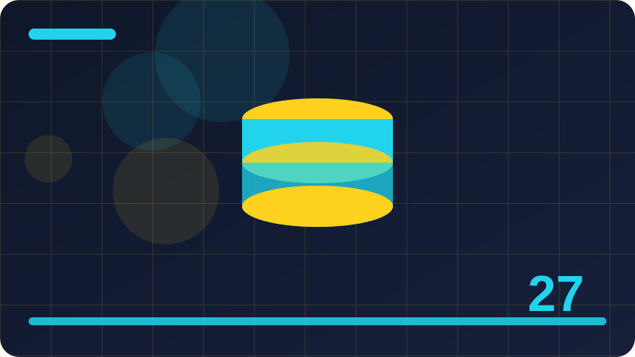

Chapter 27: Transforms: Move, Rotate and Scale

Section 1: What a Transform Does to an Element
Start with the idea behind What a Transform Does to an Element, not with its syntax. In CSS, every feature exists because a real page needed it: a designer wanted an element to move, change, resize, or respond to a different screen, and a property was added to make that change possible without JavaScript. What a Transform Does to an Element fits that story. It gives you a controlled way to make one part of a page behave differently, and it works together with the rest of your stylesheet rather than replacing it. If you understand the problem it solves, the syntax that follows will feel like a label for an idea you already own, not a code to memorise blindly.
How What a Transform Does to an Element behaves depends on the context around it. The same declaration can look different on a block element and an inline element, on a large screen and a small one, or inside a flex container versus a grid container. That is not a flaw in CSS; it is how a language designed for many kinds of pages has to work. Your job is to notice the context: what is the element's display type, what is its parent doing, and is another rule with higher specificity competing with yours? When you check those three questions first, most mysterious results become ordinary, and you stop changing values at random in the hope that something will work.
A useful way to learn What a Transform Does to an Element is to build the smallest possible example that shows it working. Give yourself one element, one rule, and one clear change to observe. If the change does not appear, check the basics before you doubt the feature: is the stylesheet linked, is the selector spelled correctly, is the property name right, and is another rule overriding yours? Most beginners' problems are spelling, linking, or specificity problems, not problems with the feature itself. A tiny example makes those problems visible, while a large page hides them under dozens of other rules.
Another common mistake is forgetting the people who will use the page. Some users navigate with a keyboard, some use screen readers, some are sensitive to motion, and some view your page on a slow connection or a small, dim screen. What a Transform Does to an Element should never make a page harder to use for those visitors. That means keeping text readable, keeping interactive elements reachable and visible, and providing a calmer alternative when motion or colour could cause harm or confusion. Thinking about those users early is not extra work; it is the same work, done properly, and it usually produces a cleaner design for everyone.
A good rule of thumb for What a Transform Does to an Element is to start simple, keep it consistent, and only add complexity when a real need appears. Use the same values across similar elements so the page feels like one design instead of a collection of experiments. Write a short comment in your stylesheet when a rule is doing something subtle, so future you — or a teammate — understands why it is there.
/* What a Transform Does to an Element */
.icon {
transform: rotate(45deg);
transform-origin: center;
}Check: In your own words, what does what a transform does to an element do, and when would you use it on a real page?
Section 2: translate: Moving Without Layout Change
Before you write anything, ask what translate: Moving Without Layout Change is for and what it is not for. A CSS feature that is used for the wrong job will fight you: it will need extra rules to undo its side effects, it will break in a surprising place, or it will make your stylesheet harder to read. translate: Moving Without Layout Change has a clear, narrow purpose, and this section keeps that purpose in focus. You will learn where it belongs in a normal stylesheet, what kind of element it works best on, and what to reach for instead when a different tool fits better. That judgement is what separates a developer who copies snippets from one who builds layouts with confidence.
The syntax for translate: Moving Without Layout Change follows the same pattern as the rest of CSS, which is good news if you already know the basics. A property name, a colon, a value, and a semicolon are all there is to a single declaration, and most of the learning is in choosing good values and combining declarations sensibly. You will see short examples in this section, and you should read each one slowly: name the selector, name each property, and say in your own words what each value does. That habit turns examples from things you copy into things you understand, and understanding is what lets you adapt an example to your own page instead of forcing your page to match the example.
When you read the code example, pay attention to the values, not just the property names. Values are where the real decisions live: how far, how fast, how large, which colour, which direction. A good value is chosen for a reason, and that reason usually comes from the design: the spacing system, the colour palette, the type scale, or the way a user will interact with the element. Try swapping a value for something clearly wrong, like a huge number, and watch what breaks. Exaggerated values are excellent teachers because they make an invisible effect impossible to miss.
Debugging translate: Moving Without Layout Change is mostly a matter of narrowing down the cause. If the result is wrong, isolate the element in a small test page, remove unrelated rules, and add them back one at a time until the problem returns. Use your browser's developer tools to see which rules actually apply to the element and which ones are crossed out by the cascade. That panel is not just for experts; it is the fastest way to answer the question every CSS developer asks, which is why is this element not doing what I wrote? Learning to read that panel early will change how quickly you solve layout problems for the rest of your career.
By the end of this section you should be able to explain translate: Moving Without Layout Change in plain words, write a short example from memory, and predict what will happen when you change its main value. You do not need to memorise every possible value today; you need the core idea, one working example, and the confidence to look up the rest when you need it. Professional developers look things up constantly.
/* translate: Moving Without Layout Change */
.panel {
transform: translateX(-100%);
}
.panel.is-open {
transform: translateX(0);
}Check: In your own words, what does translate: moving without layout change do, and when would you use it on a real page?
Section 3: translateX and translateY Separately
This section is about translateX and translateY Separately. It is a good place to slow down and build a clear mental picture before you type any code, because most confusion in CSS comes not from a single property but from a fuzzy idea of what that property is supposed to do. Think of translateX and translateY Separately as one tool with one job: it changes how an element looks or behaves in a specific, predictable way, and it leaves everything else alone unless you tell it otherwise. When you can say that job in one plain sentence, you can read other people's stylesheets faster, spot your own mistakes sooner, and choose the right property instead of guessing. That plain sentence is worth more than memorising a long list of values.
In practice, translateX and translateY Separately works through a small set of properties and values that you combine. You write a selector, you add the property, and you give it a value that the browser can interpret. The browser then applies that value when it paints the element, and it reapplies it whenever the element's state changes, the viewport changes, or another rule overrides it. Nothing happens by magic, and nothing is stored between page loads unless you write it into the stylesheet again. That predictability is a strength: if you can read the rule, you can predict the result, and if the result surprises you, you can trace it back to a specific rule.
Look closely at the example in this section and trace it step by step. Start with the element the selector targets, then follow each declaration in order and imagine the browser applying it. Ask yourself what the page would look like if you removed one declaration: that missing piece tells you what that declaration is really doing. Then change one value at a time in your own editor and reload the page. Changing one thing at a time is slower than changing five, but it teaches you five times as much, because you always know which change caused the difference you see. That discipline will save you hours on larger projects.
The most common mistake with translateX and translateY Separately is using it everywhere at once. It is tempting, once you learn a new effect, to apply it to every element on the page, but restraint is part of good design. One well-chosen effect guides the eye; twenty competing effects distract it. Ask whether this element needs the effect to be understood or used, or whether it is decoration that adds noise. If you cannot answer that question, leave the effect off and see whether the page still works. A page that works without decoration is a strong page, and decoration added afterwards will strengthen it rather than rescue it.
To practise translateX and translateY Separately, pick a small, real piece of a page you care about and apply it there, rather than in an abstract exercise. A button, a card, a heading, or a navigation link is enough. Write the rule, check it on a phone-sized window and on a desktop window, tab through it with your keyboard, and ask a friend to use it without instructions.
/* translateX and translateY Separately */
.card {
transform: translateY(-4px) scale(1.02);
transition: transform 0.2s ease;
}Check: In your own words, what does translatex and translatey separately do, and when would you use it on a real page?
Section 4: Moving in Percentages of Your Own Size
Start with the idea behind Moving in Percentages of Your Own Size, not with its syntax. In CSS, every feature exists because a real page needed it: a designer wanted an element to move, change, resize, or respond to a different screen, and a property was added to make that change possible without JavaScript. Moving in Percentages of Your Own Size fits that story. It gives you a controlled way to make one part of a page behave differently, and it works together with the rest of your stylesheet rather than replacing it. If you understand the problem it solves, the syntax that follows will feel like a label for an idea you already own, not a code to memorise blindly.
How Moving in Percentages of Your Own Size behaves depends on the context around it. The same declaration can look different on a block element and an inline element, on a large screen and a small one, or inside a flex container versus a grid container. That is not a flaw in CSS; it is how a language designed for many kinds of pages has to work. Your job is to notice the context: what is the element's display type, what is its parent doing, and is another rule with higher specificity competing with yours? When you check those three questions first, most mysterious results become ordinary, and you stop changing values at random in the hope that something will work.
A useful way to learn Moving in Percentages of Your Own Size is to build the smallest possible example that shows it working. Give yourself one element, one rule, and one clear change to observe. If the change does not appear, check the basics before you doubt the feature: is the stylesheet linked, is the selector spelled correctly, is the property name right, and is another rule overriding yours? Most beginners' problems are spelling, linking, or specificity problems, not problems with the feature itself. A tiny example makes those problems visible, while a large page hides them under dozens of other rules.
Another common mistake is forgetting the people who will use the page. Some users navigate with a keyboard, some use screen readers, some are sensitive to motion, and some view your page on a slow connection or a small, dim screen. Moving in Percentages of Your Own Size should never make a page harder to use for those visitors. That means keeping text readable, keeping interactive elements reachable and visible, and providing a calmer alternative when motion or colour could cause harm or confusion. Thinking about those users early is not extra work; it is the same work, done properly, and it usually produces a cleaner design for everyone.
A good rule of thumb for Moving in Percentages of Your Own Size is to start simple, keep it consistent, and only add complexity when a real need appears. Use the same values across similar elements so the page feels like one design instead of a collection of experiments. Write a short comment in your stylesheet when a rule is doing something subtle, so future you — or a teammate — understands why it is there.
/* Moving in Percentages of Your Own Size */
.icon {
transform: rotate(45deg);
transform-origin: center;
}Check: In your own words, what does moving in percentages of your own size do, and when would you use it on a real page?
Section 5: rotate: Turning an Element
Before you write anything, ask what rotate: Turning an Element is for and what it is not for. A CSS feature that is used for the wrong job will fight you: it will need extra rules to undo its side effects, it will break in a surprising place, or it will make your stylesheet harder to read. rotate: Turning an Element has a clear, narrow purpose, and this section keeps that purpose in focus. You will learn where it belongs in a normal stylesheet, what kind of element it works best on, and what to reach for instead when a different tool fits better. That judgement is what separates a developer who copies snippets from one who builds layouts with confidence.
The syntax for rotate: Turning an Element follows the same pattern as the rest of CSS, which is good news if you already know the basics. A property name, a colon, a value, and a semicolon are all there is to a single declaration, and most of the learning is in choosing good values and combining declarations sensibly. You will see short examples in this section, and you should read each one slowly: name the selector, name each property, and say in your own words what each value does. That habit turns examples from things you copy into things you understand, and understanding is what lets you adapt an example to your own page instead of forcing your page to match the example.
When you read the code example, pay attention to the values, not just the property names. Values are where the real decisions live: how far, how fast, how large, which colour, which direction. A good value is chosen for a reason, and that reason usually comes from the design: the spacing system, the colour palette, the type scale, or the way a user will interact with the element. Try swapping a value for something clearly wrong, like a huge number, and watch what breaks. Exaggerated values are excellent teachers because they make an invisible effect impossible to miss.
Debugging rotate: Turning an Element is mostly a matter of narrowing down the cause. If the result is wrong, isolate the element in a small test page, remove unrelated rules, and add them back one at a time until the problem returns. Use your browser's developer tools to see which rules actually apply to the element and which ones are crossed out by the cascade. That panel is not just for experts; it is the fastest way to answer the question every CSS developer asks, which is why is this element not doing what I wrote? Learning to read that panel early will change how quickly you solve layout problems for the rest of your career.
By the end of this section you should be able to explain rotate: Turning an Element in plain words, write a short example from memory, and predict what will happen when you change its main value. You do not need to memorise every possible value today; you need the core idea, one working example, and the confidence to look up the rest when you need it. Professional developers look things up constantly.
/* rotate: Turning an Element */
.panel {
transform: translateX(-100%);
}
.panel.is-open {
transform: translateX(0);
}Check: In your own words, what does rotate: turning an element do, and when would you use it on a real page?
Section 6: Degrees, Turns and Radians
This section is about Degrees, Turns and Radians. It is a good place to slow down and build a clear mental picture before you type any code, because most confusion in CSS comes not from a single property but from a fuzzy idea of what that property is supposed to do. Think of Degrees, Turns and Radians as one tool with one job: it changes how an element looks or behaves in a specific, predictable way, and it leaves everything else alone unless you tell it otherwise. When you can say that job in one plain sentence, you can read other people's stylesheets faster, spot your own mistakes sooner, and choose the right property instead of guessing. That plain sentence is worth more than memorising a long list of values.
In practice, Degrees, Turns and Radians works through a small set of properties and values that you combine. You write a selector, you add the property, and you give it a value that the browser can interpret. The browser then applies that value when it paints the element, and it reapplies it whenever the element's state changes, the viewport changes, or another rule overrides it. Nothing happens by magic, and nothing is stored between page loads unless you write it into the stylesheet again. That predictability is a strength: if you can read the rule, you can predict the result, and if the result surprises you, you can trace it back to a specific rule.
Look closely at the example in this section and trace it step by step. Start with the element the selector targets, then follow each declaration in order and imagine the browser applying it. Ask yourself what the page would look like if you removed one declaration: that missing piece tells you what that declaration is really doing. Then change one value at a time in your own editor and reload the page. Changing one thing at a time is slower than changing five, but it teaches you five times as much, because you always know which change caused the difference you see. That discipline will save you hours on larger projects.
The most common mistake with Degrees, Turns and Radians is using it everywhere at once. It is tempting, once you learn a new effect, to apply it to every element on the page, but restraint is part of good design. One well-chosen effect guides the eye; twenty competing effects distract it. Ask whether this element needs the effect to be understood or used, or whether it is decoration that adds noise. If you cannot answer that question, leave the effect off and see whether the page still works. A page that works without decoration is a strong page, and decoration added afterwards will strengthen it rather than rescue it.
To practise Degrees, Turns and Radians, pick a small, real piece of a page you care about and apply it there, rather than in an abstract exercise. A button, a card, a heading, or a navigation link is enough. Write the rule, check it on a phone-sized window and on a desktop window, tab through it with your keyboard, and ask a friend to use it without instructions.
/* Degrees, Turns and Radians */
.card {
transform: translateY(-4px) scale(1.02);
transition: transform 0.2s ease;
}Check: In your own words, what does degrees, turns and radians do, and when would you use it on a real page?
Section 7: Rotating Around a Point with transform-origin
Start with the idea behind Rotating Around a Point with transform-origin, not with its syntax. In CSS, every feature exists because a real page needed it: a designer wanted an element to move, change, resize, or respond to a different screen, and a property was added to make that change possible without JavaScript. Rotating Around a Point with transform-origin fits that story. It gives you a controlled way to make one part of a page behave differently, and it works together with the rest of your stylesheet rather than replacing it. If you understand the problem it solves, the syntax that follows will feel like a label for an idea you already own, not a code to memorise blindly.
How Rotating Around a Point with transform-origin behaves depends on the context around it. The same declaration can look different on a block element and an inline element, on a large screen and a small one, or inside a flex container versus a grid container. That is not a flaw in CSS; it is how a language designed for many kinds of pages has to work. Your job is to notice the context: what is the element's display type, what is its parent doing, and is another rule with higher specificity competing with yours? When you check those three questions first, most mysterious results become ordinary, and you stop changing values at random in the hope that something will work.
A useful way to learn Rotating Around a Point with transform-origin is to build the smallest possible example that shows it working. Give yourself one element, one rule, and one clear change to observe. If the change does not appear, check the basics before you doubt the feature: is the stylesheet linked, is the selector spelled correctly, is the property name right, and is another rule overriding yours? Most beginners' problems are spelling, linking, or specificity problems, not problems with the feature itself. A tiny example makes those problems visible, while a large page hides them under dozens of other rules.
Another common mistake is forgetting the people who will use the page. Some users navigate with a keyboard, some use screen readers, some are sensitive to motion, and some view your page on a slow connection or a small, dim screen. Rotating Around a Point with transform-origin should never make a page harder to use for those visitors. That means keeping text readable, keeping interactive elements reachable and visible, and providing a calmer alternative when motion or colour could cause harm or confusion. Thinking about those users early is not extra work; it is the same work, done properly, and it usually produces a cleaner design for everyone.
A good rule of thumb for Rotating Around a Point with transform-origin is to start simple, keep it consistent, and only add complexity when a real need appears. Use the same values across similar elements so the page feels like one design instead of a collection of experiments. Write a short comment in your stylesheet when a rule is doing something subtle, so future you — or a teammate — understands why it is there.
/* Rotating Around a Point with transform-origin */
.icon {
transform: rotate(45deg);
transform-origin: center;
}Check: In your own words, what does rotating around a point with transform-origin do, and when would you use it on a real page?
Section 8: scale: Growing and Shrinking
Before you write anything, ask what scale: Growing and Shrinking is for and what it is not for. A CSS feature that is used for the wrong job will fight you: it will need extra rules to undo its side effects, it will break in a surprising place, or it will make your stylesheet harder to read. scale: Growing and Shrinking has a clear, narrow purpose, and this section keeps that purpose in focus. You will learn where it belongs in a normal stylesheet, what kind of element it works best on, and what to reach for instead when a different tool fits better. That judgement is what separates a developer who copies snippets from one who builds layouts with confidence.
The syntax for scale: Growing and Shrinking follows the same pattern as the rest of CSS, which is good news if you already know the basics. A property name, a colon, a value, and a semicolon are all there is to a single declaration, and most of the learning is in choosing good values and combining declarations sensibly. You will see short examples in this section, and you should read each one slowly: name the selector, name each property, and say in your own words what each value does. That habit turns examples from things you copy into things you understand, and understanding is what lets you adapt an example to your own page instead of forcing your page to match the example.
When you read the code example, pay attention to the values, not just the property names. Values are where the real decisions live: how far, how fast, how large, which colour, which direction. A good value is chosen for a reason, and that reason usually comes from the design: the spacing system, the colour palette, the type scale, or the way a user will interact with the element. Try swapping a value for something clearly wrong, like a huge number, and watch what breaks. Exaggerated values are excellent teachers because they make an invisible effect impossible to miss.
Debugging scale: Growing and Shrinking is mostly a matter of narrowing down the cause. If the result is wrong, isolate the element in a small test page, remove unrelated rules, and add them back one at a time until the problem returns. Use your browser's developer tools to see which rules actually apply to the element and which ones are crossed out by the cascade. That panel is not just for experts; it is the fastest way to answer the question every CSS developer asks, which is why is this element not doing what I wrote? Learning to read that panel early will change how quickly you solve layout problems for the rest of your career.
By the end of this section you should be able to explain scale: Growing and Shrinking in plain words, write a short example from memory, and predict what will happen when you change its main value. You do not need to memorise every possible value today; you need the core idea, one working example, and the confidence to look up the rest when you need it. Professional developers look things up constantly.
/* scale: Growing and Shrinking */
.panel {
transform: translateX(-100%);
}
.panel.is-open {
transform: translateX(0);
}Check: In your own words, what does scale: growing and shrinking do, and when would you use it on a real page?
Section 9: Scaling Width and Height Independently
This section is about Scaling Width and Height Independently. It is a good place to slow down and build a clear mental picture before you type any code, because most confusion in CSS comes not from a single property but from a fuzzy idea of what that property is supposed to do. Think of Scaling Width and Height Independently as one tool with one job: it changes how an element looks or behaves in a specific, predictable way, and it leaves everything else alone unless you tell it otherwise. When you can say that job in one plain sentence, you can read other people's stylesheets faster, spot your own mistakes sooner, and choose the right property instead of guessing. That plain sentence is worth more than memorising a long list of values.
In practice, Scaling Width and Height Independently works through a small set of properties and values that you combine. You write a selector, you add the property, and you give it a value that the browser can interpret. The browser then applies that value when it paints the element, and it reapplies it whenever the element's state changes, the viewport changes, or another rule overrides it. Nothing happens by magic, and nothing is stored between page loads unless you write it into the stylesheet again. That predictability is a strength: if you can read the rule, you can predict the result, and if the result surprises you, you can trace it back to a specific rule.
Look closely at the example in this section and trace it step by step. Start with the element the selector targets, then follow each declaration in order and imagine the browser applying it. Ask yourself what the page would look like if you removed one declaration: that missing piece tells you what that declaration is really doing. Then change one value at a time in your own editor and reload the page. Changing one thing at a time is slower than changing five, but it teaches you five times as much, because you always know which change caused the difference you see. That discipline will save you hours on larger projects.
The most common mistake with Scaling Width and Height Independently is using it everywhere at once. It is tempting, once you learn a new effect, to apply it to every element on the page, but restraint is part of good design. One well-chosen effect guides the eye; twenty competing effects distract it. Ask whether this element needs the effect to be understood or used, or whether it is decoration that adds noise. If you cannot answer that question, leave the effect off and see whether the page still works. A page that works without decoration is a strong page, and decoration added afterwards will strengthen it rather than rescue it.
To practise Scaling Width and Height Independently, pick a small, real piece of a page you care about and apply it there, rather than in an abstract exercise. A button, a card, a heading, or a navigation link is enough. Write the rule, check it on a phone-sized window and on a desktop window, tab through it with your keyboard, and ask a friend to use it without instructions.
/* Scaling Width and Height Independently */
.card {
transform: translateY(-4px) scale(1.02);
transition: transform 0.2s ease;
}Check: In your own words, what does scaling width and height independently do, and when would you use it on a real page?
Section 10: Flipping an Element with Negative Scale
Start with the idea behind Flipping an Element with Negative Scale, not with its syntax. In CSS, every feature exists because a real page needed it: a designer wanted an element to move, change, resize, or respond to a different screen, and a property was added to make that change possible without JavaScript. Flipping an Element with Negative Scale fits that story. It gives you a controlled way to make one part of a page behave differently, and it works together with the rest of your stylesheet rather than replacing it. If you understand the problem it solves, the syntax that follows will feel like a label for an idea you already own, not a code to memorise blindly.
How Flipping an Element with Negative Scale behaves depends on the context around it. The same declaration can look different on a block element and an inline element, on a large screen and a small one, or inside a flex container versus a grid container. That is not a flaw in CSS; it is how a language designed for many kinds of pages has to work. Your job is to notice the context: what is the element's display type, what is its parent doing, and is another rule with higher specificity competing with yours? When you check those three questions first, most mysterious results become ordinary, and you stop changing values at random in the hope that something will work.
A useful way to learn Flipping an Element with Negative Scale is to build the smallest possible example that shows it working. Give yourself one element, one rule, and one clear change to observe. If the change does not appear, check the basics before you doubt the feature: is the stylesheet linked, is the selector spelled correctly, is the property name right, and is another rule overriding yours? Most beginners' problems are spelling, linking, or specificity problems, not problems with the feature itself. A tiny example makes those problems visible, while a large page hides them under dozens of other rules.
Another common mistake is forgetting the people who will use the page. Some users navigate with a keyboard, some use screen readers, some are sensitive to motion, and some view your page on a slow connection or a small, dim screen. Flipping an Element with Negative Scale should never make a page harder to use for those visitors. That means keeping text readable, keeping interactive elements reachable and visible, and providing a calmer alternative when motion or colour could cause harm or confusion. Thinking about those users early is not extra work; it is the same work, done properly, and it usually produces a cleaner design for everyone.
A good rule of thumb for Flipping an Element with Negative Scale is to start simple, keep it consistent, and only add complexity when a real need appears. Use the same values across similar elements so the page feels like one design instead of a collection of experiments. Write a short comment in your stylesheet when a rule is doing something subtle, so future you — or a teammate — understands why it is there.
/* Flipping an Element with Negative Scale */
.icon {
transform: rotate(45deg);
transform-origin: center;
}Check: In your own words, what does flipping an element with negative scale do, and when would you use it on a real page?
Section 11: skew: Slanting an Element
Before you write anything, ask what skew: Slanting an Element is for and what it is not for. A CSS feature that is used for the wrong job will fight you: it will need extra rules to undo its side effects, it will break in a surprising place, or it will make your stylesheet harder to read. skew: Slanting an Element has a clear, narrow purpose, and this section keeps that purpose in focus. You will learn where it belongs in a normal stylesheet, what kind of element it works best on, and what to reach for instead when a different tool fits better. That judgement is what separates a developer who copies snippets from one who builds layouts with confidence.
The syntax for skew: Slanting an Element follows the same pattern as the rest of CSS, which is good news if you already know the basics. A property name, a colon, a value, and a semicolon are all there is to a single declaration, and most of the learning is in choosing good values and combining declarations sensibly. You will see short examples in this section, and you should read each one slowly: name the selector, name each property, and say in your own words what each value does. That habit turns examples from things you copy into things you understand, and understanding is what lets you adapt an example to your own page instead of forcing your page to match the example.
When you read the code example, pay attention to the values, not just the property names. Values are where the real decisions live: how far, how fast, how large, which colour, which direction. A good value is chosen for a reason, and that reason usually comes from the design: the spacing system, the colour palette, the type scale, or the way a user will interact with the element. Try swapping a value for something clearly wrong, like a huge number, and watch what breaks. Exaggerated values are excellent teachers because they make an invisible effect impossible to miss.
Debugging skew: Slanting an Element is mostly a matter of narrowing down the cause. If the result is wrong, isolate the element in a small test page, remove unrelated rules, and add them back one at a time until the problem returns. Use your browser's developer tools to see which rules actually apply to the element and which ones are crossed out by the cascade. That panel is not just for experts; it is the fastest way to answer the question every CSS developer asks, which is why is this element not doing what I wrote? Learning to read that panel early will change how quickly you solve layout problems for the rest of your career.
By the end of this section you should be able to explain skew: Slanting an Element in plain words, write a short example from memory, and predict what will happen when you change its main value. You do not need to memorise every possible value today; you need the core idea, one working example, and the confidence to look up the rest when you need it. Professional developers look things up constantly.
/* skew: Slanting an Element */
.panel {
transform: translateX(-100%);
}
.panel.is-open {
transform: translateX(0);
}Check: In your own words, what does skew: slanting an element do, and when would you use it on a real page?
Section 12: Combining Several Transforms in One Line
This section is about Combining Several Transforms in One Line. It is a good place to slow down and build a clear mental picture before you type any code, because most confusion in CSS comes not from a single property but from a fuzzy idea of what that property is supposed to do. Think of Combining Several Transforms in One Line as one tool with one job: it changes how an element looks or behaves in a specific, predictable way, and it leaves everything else alone unless you tell it otherwise. When you can say that job in one plain sentence, you can read other people's stylesheets faster, spot your own mistakes sooner, and choose the right property instead of guessing. That plain sentence is worth more than memorising a long list of values.
In practice, Combining Several Transforms in One Line works through a small set of properties and values that you combine. You write a selector, you add the property, and you give it a value that the browser can interpret. The browser then applies that value when it paints the element, and it reapplies it whenever the element's state changes, the viewport changes, or another rule overrides it. Nothing happens by magic, and nothing is stored between page loads unless you write it into the stylesheet again. That predictability is a strength: if you can read the rule, you can predict the result, and if the result surprises you, you can trace it back to a specific rule.
Look closely at the example in this section and trace it step by step. Start with the element the selector targets, then follow each declaration in order and imagine the browser applying it. Ask yourself what the page would look like if you removed one declaration: that missing piece tells you what that declaration is really doing. Then change one value at a time in your own editor and reload the page. Changing one thing at a time is slower than changing five, but it teaches you five times as much, because you always know which change caused the difference you see. That discipline will save you hours on larger projects.
The most common mistake with Combining Several Transforms in One Line is using it everywhere at once. It is tempting, once you learn a new effect, to apply it to every element on the page, but restraint is part of good design. One well-chosen effect guides the eye; twenty competing effects distract it. Ask whether this element needs the effect to be understood or used, or whether it is decoration that adds noise. If you cannot answer that question, leave the effect off and see whether the page still works. A page that works without decoration is a strong page, and decoration added afterwards will strengthen it rather than rescue it.
To practise Combining Several Transforms in One Line, pick a small, real piece of a page you care about and apply it there, rather than in an abstract exercise. A button, a card, a heading, or a navigation link is enough. Write the rule, check it on a phone-sized window and on a desktop window, tab through it with your keyboard, and ask a friend to use it without instructions.
/* Combining Several Transforms in One Line */
.card {
transform: translateY(-4px) scale(1.02);
transition: transform 0.2s ease;
}Check: In your own words, what does combining several transforms in one line do, and when would you use it on a real page?
Section 13: Order Matters in Transform Lists
Start with the idea behind Order Matters in Transform Lists, not with its syntax. In CSS, every feature exists because a real page needed it: a designer wanted an element to move, change, resize, or respond to a different screen, and a property was added to make that change possible without JavaScript. Order Matters in Transform Lists fits that story. It gives you a controlled way to make one part of a page behave differently, and it works together with the rest of your stylesheet rather than replacing it. If you understand the problem it solves, the syntax that follows will feel like a label for an idea you already own, not a code to memorise blindly.
How Order Matters in Transform Lists behaves depends on the context around it. The same declaration can look different on a block element and an inline element, on a large screen and a small one, or inside a flex container versus a grid container. That is not a flaw in CSS; it is how a language designed for many kinds of pages has to work. Your job is to notice the context: what is the element's display type, what is its parent doing, and is another rule with higher specificity competing with yours? When you check those three questions first, most mysterious results become ordinary, and you stop changing values at random in the hope that something will work.
A useful way to learn Order Matters in Transform Lists is to build the smallest possible example that shows it working. Give yourself one element, one rule, and one clear change to observe. If the change does not appear, check the basics before you doubt the feature: is the stylesheet linked, is the selector spelled correctly, is the property name right, and is another rule overriding yours? Most beginners' problems are spelling, linking, or specificity problems, not problems with the feature itself. A tiny example makes those problems visible, while a large page hides them under dozens of other rules.
Another common mistake is forgetting the people who will use the page. Some users navigate with a keyboard, some use screen readers, some are sensitive to motion, and some view your page on a slow connection or a small, dim screen. Order Matters in Transform Lists should never make a page harder to use for those visitors. That means keeping text readable, keeping interactive elements reachable and visible, and providing a calmer alternative when motion or colour could cause harm or confusion. Thinking about those users early is not extra work; it is the same work, done properly, and it usually produces a cleaner design for everyone.
A good rule of thumb for Order Matters in Transform Lists is to start simple, keep it consistent, and only add complexity when a real need appears. Use the same values across similar elements so the page feels like one design instead of a collection of experiments. Write a short comment in your stylesheet when a rule is doing something subtle, so future you — or a teammate — understands why it is there.
/* Order Matters in Transform Lists */
.icon {
transform: rotate(45deg);
transform-origin: center;
}Check: In your own words, what does order matters in transform lists do, and when would you use it on a real page?
Section 14: Transform and the Box Around an Element
Before you write anything, ask what Transform and the Box Around an Element is for and what it is not for. A CSS feature that is used for the wrong job will fight you: it will need extra rules to undo its side effects, it will break in a surprising place, or it will make your stylesheet harder to read. Transform and the Box Around an Element has a clear, narrow purpose, and this section keeps that purpose in focus. You will learn where it belongs in a normal stylesheet, what kind of element it works best on, and what to reach for instead when a different tool fits better. That judgement is what separates a developer who copies snippets from one who builds layouts with confidence.
The syntax for Transform and the Box Around an Element follows the same pattern as the rest of CSS, which is good news if you already know the basics. A property name, a colon, a value, and a semicolon are all there is to a single declaration, and most of the learning is in choosing good values and combining declarations sensibly. You will see short examples in this section, and you should read each one slowly: name the selector, name each property, and say in your own words what each value does. That habit turns examples from things you copy into things you understand, and understanding is what lets you adapt an example to your own page instead of forcing your page to match the example.
When you read the code example, pay attention to the values, not just the property names. Values are where the real decisions live: how far, how fast, how large, which colour, which direction. A good value is chosen for a reason, and that reason usually comes from the design: the spacing system, the colour palette, the type scale, or the way a user will interact with the element. Try swapping a value for something clearly wrong, like a huge number, and watch what breaks. Exaggerated values are excellent teachers because they make an invisible effect impossible to miss.
Debugging Transform and the Box Around an Element is mostly a matter of narrowing down the cause. If the result is wrong, isolate the element in a small test page, remove unrelated rules, and add them back one at a time until the problem returns. Use your browser's developer tools to see which rules actually apply to the element and which ones are crossed out by the cascade. That panel is not just for experts; it is the fastest way to answer the question every CSS developer asks, which is why is this element not doing what I wrote? Learning to read that panel early will change how quickly you solve layout problems for the rest of your career.
By the end of this section you should be able to explain Transform and the Box Around an Element in plain words, write a short example from memory, and predict what will happen when you change its main value. You do not need to memorise every possible value today; you need the core idea, one working example, and the confidence to look up the rest when you need it. Professional developers look things up constantly.
/* Transform and the Box Around an Element */
.panel {
transform: translateX(-100%);
}
.panel.is-open {
transform: translateX(0);
}Check: In your own words, what does transform and the box around an element do, and when would you use it on a real page?
Section 15: Centring with translate(-50%, -50%)
This section is about Centring with translate(-50%, -50%). It is a good place to slow down and build a clear mental picture before you type any code, because most confusion in CSS comes not from a single property but from a fuzzy idea of what that property is supposed to do. Think of Centring with translate(-50%, -50%) as one tool with one job: it changes how an element looks or behaves in a specific, predictable way, and it leaves everything else alone unless you tell it otherwise. When you can say that job in one plain sentence, you can read other people's stylesheets faster, spot your own mistakes sooner, and choose the right property instead of guessing. That plain sentence is worth more than memorising a long list of values.
In practice, Centring with translate(-50%, -50%) works through a small set of properties and values that you combine. You write a selector, you add the property, and you give it a value that the browser can interpret. The browser then applies that value when it paints the element, and it reapplies it whenever the element's state changes, the viewport changes, or another rule overrides it. Nothing happens by magic, and nothing is stored between page loads unless you write it into the stylesheet again. That predictability is a strength: if you can read the rule, you can predict the result, and if the result surprises you, you can trace it back to a specific rule.
Look closely at the example in this section and trace it step by step. Start with the element the selector targets, then follow each declaration in order and imagine the browser applying it. Ask yourself what the page would look like if you removed one declaration: that missing piece tells you what that declaration is really doing. Then change one value at a time in your own editor and reload the page. Changing one thing at a time is slower than changing five, but it teaches you five times as much, because you always know which change caused the difference you see. That discipline will save you hours on larger projects.
The most common mistake with Centring with translate(-50%, -50%) is using it everywhere at once. It is tempting, once you learn a new effect, to apply it to every element on the page, but restraint is part of good design. One well-chosen effect guides the eye; twenty competing effects distract it. Ask whether this element needs the effect to be understood or used, or whether it is decoration that adds noise. If you cannot answer that question, leave the effect off and see whether the page still works. A page that works without decoration is a strong page, and decoration added afterwards will strengthen it rather than rescue it.
To practise Centring with translate(-50%, -50%), pick a small, real piece of a page you care about and apply it there, rather than in an abstract exercise. A button, a card, a heading, or a navigation link is enough. Write the rule, check it on a phone-sized window and on a desktop window, tab through it with your keyboard, and ask a friend to use it without instructions.
/* Centring with translate(-50%, -50%) */
.card {
transform: translateY(-4px) scale(1.02);
transition: transform 0.2s ease;
}Check: In your own words, what does centring with translate(-50%, -50%) do, and when would you use it on a real page?
Section 16: Transform on Hover for Interactive Cards
Start with the idea behind Transform on Hover for Interactive Cards, not with its syntax. In CSS, every feature exists because a real page needed it: a designer wanted an element to move, change, resize, or respond to a different screen, and a property was added to make that change possible without JavaScript. Transform on Hover for Interactive Cards fits that story. It gives you a controlled way to make one part of a page behave differently, and it works together with the rest of your stylesheet rather than replacing it. If you understand the problem it solves, the syntax that follows will feel like a label for an idea you already own, not a code to memorise blindly.
How Transform on Hover for Interactive Cards behaves depends on the context around it. The same declaration can look different on a block element and an inline element, on a large screen and a small one, or inside a flex container versus a grid container. That is not a flaw in CSS; it is how a language designed for many kinds of pages has to work. Your job is to notice the context: what is the element's display type, what is its parent doing, and is another rule with higher specificity competing with yours? When you check those three questions first, most mysterious results become ordinary, and you stop changing values at random in the hope that something will work.
A useful way to learn Transform on Hover for Interactive Cards is to build the smallest possible example that shows it working. Give yourself one element, one rule, and one clear change to observe. If the change does not appear, check the basics before you doubt the feature: is the stylesheet linked, is the selector spelled correctly, is the property name right, and is another rule overriding yours? Most beginners' problems are spelling, linking, or specificity problems, not problems with the feature itself. A tiny example makes those problems visible, while a large page hides them under dozens of other rules.
Another common mistake is forgetting the people who will use the page. Some users navigate with a keyboard, some use screen readers, some are sensitive to motion, and some view your page on a slow connection or a small, dim screen. Transform on Hover for Interactive Cards should never make a page harder to use for those visitors. That means keeping text readable, keeping interactive elements reachable and visible, and providing a calmer alternative when motion or colour could cause harm or confusion. Thinking about those users early is not extra work; it is the same work, done properly, and it usually produces a cleaner design for everyone.
A good rule of thumb for Transform on Hover for Interactive Cards is to start simple, keep it consistent, and only add complexity when a real need appears. Use the same values across similar elements so the page feels like one design instead of a collection of experiments. Write a short comment in your stylesheet when a rule is doing something subtle, so future you — or a teammate — understands why it is there.
/* Transform on Hover for Interactive Cards */
.icon {
transform: rotate(45deg);
transform-origin: center;
}Check: In your own words, what does transform on hover for interactive cards do, and when would you use it on a real page?
Section 17: Transform with Transition for Smooth Motion
Before you write anything, ask what Transform with Transition for Smooth Motion is for and what it is not for. A CSS feature that is used for the wrong job will fight you: it will need extra rules to undo its side effects, it will break in a surprising place, or it will make your stylesheet harder to read. Transform with Transition for Smooth Motion has a clear, narrow purpose, and this section keeps that purpose in focus. You will learn where it belongs in a normal stylesheet, what kind of element it works best on, and what to reach for instead when a different tool fits better. That judgement is what separates a developer who copies snippets from one who builds layouts with confidence.
The syntax for Transform with Transition for Smooth Motion follows the same pattern as the rest of CSS, which is good news if you already know the basics. A property name, a colon, a value, and a semicolon are all there is to a single declaration, and most of the learning is in choosing good values and combining declarations sensibly. You will see short examples in this section, and you should read each one slowly: name the selector, name each property, and say in your own words what each value does. That habit turns examples from things you copy into things you understand, and understanding is what lets you adapt an example to your own page instead of forcing your page to match the example.
When you read the code example, pay attention to the values, not just the property names. Values are where the real decisions live: how far, how fast, how large, which colour, which direction. A good value is chosen for a reason, and that reason usually comes from the design: the spacing system, the colour palette, the type scale, or the way a user will interact with the element. Try swapping a value for something clearly wrong, like a huge number, and watch what breaks. Exaggerated values are excellent teachers because they make an invisible effect impossible to miss.
Debugging Transform with Transition for Smooth Motion is mostly a matter of narrowing down the cause. If the result is wrong, isolate the element in a small test page, remove unrelated rules, and add them back one at a time until the problem returns. Use your browser's developer tools to see which rules actually apply to the element and which ones are crossed out by the cascade. That panel is not just for experts; it is the fastest way to answer the question every CSS developer asks, which is why is this element not doing what I wrote? Learning to read that panel early will change how quickly you solve layout problems for the rest of your career.
By the end of this section you should be able to explain Transform with Transition for Smooth Motion in plain words, write a short example from memory, and predict what will happen when you change its main value. You do not need to memorise every possible value today; you need the core idea, one working example, and the confidence to look up the rest when you need it. Professional developers look things up constantly.
/* Transform with Transition for Smooth Motion */
.panel {
transform: translateX(-100%);
}
.panel.is-open {
transform: translateX(0);
}Check: In your own words, what does transform with transition for smooth motion do, and when would you use it on a real page?
Section 18: Transform in Keyframes for Animation
This section is about Transform in Keyframes for Animation. It is a good place to slow down and build a clear mental picture before you type any code, because most confusion in CSS comes not from a single property but from a fuzzy idea of what that property is supposed to do. Think of Transform in Keyframes for Animation as one tool with one job: it changes how an element looks or behaves in a specific, predictable way, and it leaves everything else alone unless you tell it otherwise. When you can say that job in one plain sentence, you can read other people's stylesheets faster, spot your own mistakes sooner, and choose the right property instead of guessing. That plain sentence is worth more than memorising a long list of values.
In practice, Transform in Keyframes for Animation works through a small set of properties and values that you combine. You write a selector, you add the property, and you give it a value that the browser can interpret. The browser then applies that value when it paints the element, and it reapplies it whenever the element's state changes, the viewport changes, or another rule overrides it. Nothing happens by magic, and nothing is stored between page loads unless you write it into the stylesheet again. That predictability is a strength: if you can read the rule, you can predict the result, and if the result surprises you, you can trace it back to a specific rule.
Look closely at the example in this section and trace it step by step. Start with the element the selector targets, then follow each declaration in order and imagine the browser applying it. Ask yourself what the page would look like if you removed one declaration: that missing piece tells you what that declaration is really doing. Then change one value at a time in your own editor and reload the page. Changing one thing at a time is slower than changing five, but it teaches you five times as much, because you always know which change caused the difference you see. That discipline will save you hours on larger projects.
The most common mistake with Transform in Keyframes for Animation is using it everywhere at once. It is tempting, once you learn a new effect, to apply it to every element on the page, but restraint is part of good design. One well-chosen effect guides the eye; twenty competing effects distract it. Ask whether this element needs the effect to be understood or used, or whether it is decoration that adds noise. If you cannot answer that question, leave the effect off and see whether the page still works. A page that works without decoration is a strong page, and decoration added afterwards will strengthen it rather than rescue it.
To practise Transform in Keyframes for Animation, pick a small, real piece of a page you care about and apply it there, rather than in an abstract exercise. A button, a card, a heading, or a navigation link is enough. Write the rule, check it on a phone-sized window and on a desktop window, tab through it with your keyboard, and ask a friend to use it without instructions.
/* Transform in Keyframes for Animation */
.card {
transform: translateY(-4px) scale(1.02);
transition: transform 0.2s ease;
}Check: In your own words, what does transform in keyframes for animation do, and when would you use it on a real page?
Section 19: Preserving Layout While Transforming
Start with the idea behind Preserving Layout While Transforming, not with its syntax. In CSS, every feature exists because a real page needed it: a designer wanted an element to move, change, resize, or respond to a different screen, and a property was added to make that change possible without JavaScript. Preserving Layout While Transforming fits that story. It gives you a controlled way to make one part of a page behave differently, and it works together with the rest of your stylesheet rather than replacing it. If you understand the problem it solves, the syntax that follows will feel like a label for an idea you already own, not a code to memorise blindly.
How Preserving Layout While Transforming behaves depends on the context around it. The same declaration can look different on a block element and an inline element, on a large screen and a small one, or inside a flex container versus a grid container. That is not a flaw in CSS; it is how a language designed for many kinds of pages has to work. Your job is to notice the context: what is the element's display type, what is its parent doing, and is another rule with higher specificity competing with yours? When you check those three questions first, most mysterious results become ordinary, and you stop changing values at random in the hope that something will work.
A useful way to learn Preserving Layout While Transforming is to build the smallest possible example that shows it working. Give yourself one element, one rule, and one clear change to observe. If the change does not appear, check the basics before you doubt the feature: is the stylesheet linked, is the selector spelled correctly, is the property name right, and is another rule overriding yours? Most beginners' problems are spelling, linking, or specificity problems, not problems with the feature itself. A tiny example makes those problems visible, while a large page hides them under dozens of other rules.
Another common mistake is forgetting the people who will use the page. Some users navigate with a keyboard, some use screen readers, some are sensitive to motion, and some view your page on a slow connection or a small, dim screen. Preserving Layout While Transforming should never make a page harder to use for those visitors. That means keeping text readable, keeping interactive elements reachable and visible, and providing a calmer alternative when motion or colour could cause harm or confusion. Thinking about those users early is not extra work; it is the same work, done properly, and it usually produces a cleaner design for everyone.
A good rule of thumb for Preserving Layout While Transforming is to start simple, keep it consistent, and only add complexity when a real need appears. Use the same values across similar elements so the page feels like one design instead of a collection of experiments. Write a short comment in your stylesheet when a rule is doing something subtle, so future you — or a teammate — understands why it is there.
/* Preserving Layout While Transforming */
.icon {
transform: rotate(45deg);
transform-origin: center;
}Check: In your own words, what does preserving layout while transforming do, and when would you use it on a real page?
Section 20: Transform and Stacking Order
Before you write anything, ask what Transform and Stacking Order is for and what it is not for. A CSS feature that is used for the wrong job will fight you: it will need extra rules to undo its side effects, it will break in a surprising place, or it will make your stylesheet harder to read. Transform and Stacking Order has a clear, narrow purpose, and this section keeps that purpose in focus. You will learn where it belongs in a normal stylesheet, what kind of element it works best on, and what to reach for instead when a different tool fits better. That judgement is what separates a developer who copies snippets from one who builds layouts with confidence.
The syntax for Transform and Stacking Order follows the same pattern as the rest of CSS, which is good news if you already know the basics. A property name, a colon, a value, and a semicolon are all there is to a single declaration, and most of the learning is in choosing good values and combining declarations sensibly. You will see short examples in this section, and you should read each one slowly: name the selector, name each property, and say in your own words what each value does. That habit turns examples from things you copy into things you understand, and understanding is what lets you adapt an example to your own page instead of forcing your page to match the example.
When you read the code example, pay attention to the values, not just the property names. Values are where the real decisions live: how far, how fast, how large, which colour, which direction. A good value is chosen for a reason, and that reason usually comes from the design: the spacing system, the colour palette, the type scale, or the way a user will interact with the element. Try swapping a value for something clearly wrong, like a huge number, and watch what breaks. Exaggerated values are excellent teachers because they make an invisible effect impossible to miss.
Debugging Transform and Stacking Order is mostly a matter of narrowing down the cause. If the result is wrong, isolate the element in a small test page, remove unrelated rules, and add them back one at a time until the problem returns. Use your browser's developer tools to see which rules actually apply to the element and which ones are crossed out by the cascade. That panel is not just for experts; it is the fastest way to answer the question every CSS developer asks, which is why is this element not doing what I wrote? Learning to read that panel early will change how quickly you solve layout problems for the rest of your career.
By the end of this section you should be able to explain Transform and Stacking Order in plain words, write a short example from memory, and predict what will happen when you change its main value. You do not need to memorise every possible value today; you need the core idea, one working example, and the confidence to look up the rest when you need it. Professional developers look things up constantly.
/* Transform and Stacking Order */
.panel {
transform: translateX(-100%);
}
.panel.is-open {
transform: translateX(0);
}Check: In your own words, what does transform and stacking order do, and when would you use it on a real page?
Section 21: Transform Creates a Containing Block
This section is about Transform Creates a Containing Block. It is a good place to slow down and build a clear mental picture before you type any code, because most confusion in CSS comes not from a single property but from a fuzzy idea of what that property is supposed to do. Think of Transform Creates a Containing Block as one tool with one job: it changes how an element looks or behaves in a specific, predictable way, and it leaves everything else alone unless you tell it otherwise. When you can say that job in one plain sentence, you can read other people's stylesheets faster, spot your own mistakes sooner, and choose the right property instead of guessing. That plain sentence is worth more than memorising a long list of values.
In practice, Transform Creates a Containing Block works through a small set of properties and values that you combine. You write a selector, you add the property, and you give it a value that the browser can interpret. The browser then applies that value when it paints the element, and it reapplies it whenever the element's state changes, the viewport changes, or another rule overrides it. Nothing happens by magic, and nothing is stored between page loads unless you write it into the stylesheet again. That predictability is a strength: if you can read the rule, you can predict the result, and if the result surprises you, you can trace it back to a specific rule.
Look closely at the example in this section and trace it step by step. Start with the element the selector targets, then follow each declaration in order and imagine the browser applying it. Ask yourself what the page would look like if you removed one declaration: that missing piece tells you what that declaration is really doing. Then change one value at a time in your own editor and reload the page. Changing one thing at a time is slower than changing five, but it teaches you five times as much, because you always know which change caused the difference you see. That discipline will save you hours on larger projects.
The most common mistake with Transform Creates a Containing Block is using it everywhere at once. It is tempting, once you learn a new effect, to apply it to every element on the page, but restraint is part of good design. One well-chosen effect guides the eye; twenty competing effects distract it. Ask whether this element needs the effect to be understood or used, or whether it is decoration that adds noise. If you cannot answer that question, leave the effect off and see whether the page still works. A page that works without decoration is a strong page, and decoration added afterwards will strengthen it rather than rescue it.
To practise Transform Creates a Containing Block, pick a small, real piece of a page you care about and apply it there, rather than in an abstract exercise. A button, a card, a heading, or a navigation link is enough. Write the rule, check it on a phone-sized window and on a desktop window, tab through it with your keyboard, and ask a friend to use it without instructions.
/* Transform Creates a Containing Block */
.card {
transform: translateY(-4px) scale(1.02);
transition: transform 0.2s ease;
}Check: In your own words, what does transform creates a containing block do, and when would you use it on a real page?
Section 22: Transform and Fixed Positioning Inside
Start with the idea behind Transform and Fixed Positioning Inside, not with its syntax. In CSS, every feature exists because a real page needed it: a designer wanted an element to move, change, resize, or respond to a different screen, and a property was added to make that change possible without JavaScript. Transform and Fixed Positioning Inside fits that story. It gives you a controlled way to make one part of a page behave differently, and it works together with the rest of your stylesheet rather than replacing it. If you understand the problem it solves, the syntax that follows will feel like a label for an idea you already own, not a code to memorise blindly.
How Transform and Fixed Positioning Inside behaves depends on the context around it. The same declaration can look different on a block element and an inline element, on a large screen and a small one, or inside a flex container versus a grid container. That is not a flaw in CSS; it is how a language designed for many kinds of pages has to work. Your job is to notice the context: what is the element's display type, what is its parent doing, and is another rule with higher specificity competing with yours? When you check those three questions first, most mysterious results become ordinary, and you stop changing values at random in the hope that something will work.
A useful way to learn Transform and Fixed Positioning Inside is to build the smallest possible example that shows it working. Give yourself one element, one rule, and one clear change to observe. If the change does not appear, check the basics before you doubt the feature: is the stylesheet linked, is the selector spelled correctly, is the property name right, and is another rule overriding yours? Most beginners' problems are spelling, linking, or specificity problems, not problems with the feature itself. A tiny example makes those problems visible, while a large page hides them under dozens of other rules.
Another common mistake is forgetting the people who will use the page. Some users navigate with a keyboard, some use screen readers, some are sensitive to motion, and some view your page on a slow connection or a small, dim screen. Transform and Fixed Positioning Inside should never make a page harder to use for those visitors. That means keeping text readable, keeping interactive elements reachable and visible, and providing a calmer alternative when motion or colour could cause harm or confusion. Thinking about those users early is not extra work; it is the same work, done properly, and it usually produces a cleaner design for everyone.
A good rule of thumb for Transform and Fixed Positioning Inside is to start simple, keep it consistent, and only add complexity when a real need appears. Use the same values across similar elements so the page feels like one design instead of a collection of experiments. Write a short comment in your stylesheet when a rule is doing something subtle, so future you — or a teammate — understands why it is there.
/* Transform and Fixed Positioning Inside */
.icon {
transform: rotate(45deg);
transform-origin: center;
}Check: In your own words, what does transform and fixed positioning inside do, and when would you use it on a real page?
Section 23: Transform and Overflow Clipping
Before you write anything, ask what Transform and Overflow Clipping is for and what it is not for. A CSS feature that is used for the wrong job will fight you: it will need extra rules to undo its side effects, it will break in a surprising place, or it will make your stylesheet harder to read. Transform and Overflow Clipping has a clear, narrow purpose, and this section keeps that purpose in focus. You will learn where it belongs in a normal stylesheet, what kind of element it works best on, and what to reach for instead when a different tool fits better. That judgement is what separates a developer who copies snippets from one who builds layouts with confidence.
The syntax for Transform and Overflow Clipping follows the same pattern as the rest of CSS, which is good news if you already know the basics. A property name, a colon, a value, and a semicolon are all there is to a single declaration, and most of the learning is in choosing good values and combining declarations sensibly. You will see short examples in this section, and you should read each one slowly: name the selector, name each property, and say in your own words what each value does. That habit turns examples from things you copy into things you understand, and understanding is what lets you adapt an example to your own page instead of forcing your page to match the example.
When you read the code example, pay attention to the values, not just the property names. Values are where the real decisions live: how far, how fast, how large, which colour, which direction. A good value is chosen for a reason, and that reason usually comes from the design: the spacing system, the colour palette, the type scale, or the way a user will interact with the element. Try swapping a value for something clearly wrong, like a huge number, and watch what breaks. Exaggerated values are excellent teachers because they make an invisible effect impossible to miss.
Debugging Transform and Overflow Clipping is mostly a matter of narrowing down the cause. If the result is wrong, isolate the element in a small test page, remove unrelated rules, and add them back one at a time until the problem returns. Use your browser's developer tools to see which rules actually apply to the element and which ones are crossed out by the cascade. That panel is not just for experts; it is the fastest way to answer the question every CSS developer asks, which is why is this element not doing what I wrote? Learning to read that panel early will change how quickly you solve layout problems for the rest of your career.
By the end of this section you should be able to explain Transform and Overflow Clipping in plain words, write a short example from memory, and predict what will happen when you change its main value. You do not need to memorise every possible value today; you need the core idea, one working example, and the confidence to look up the rest when you need it. Professional developers look things up constantly.
/* Transform and Overflow Clipping */
.panel {
transform: translateX(-100%);
}
.panel.is-open {
transform: translateX(0);
}Check: In your own words, what does transform and overflow clipping do, and when would you use it on a real page?
Section 24: transform-origin on Corners and Edges
This section is about transform-origin on Corners and Edges. It is a good place to slow down and build a clear mental picture before you type any code, because most confusion in CSS comes not from a single property but from a fuzzy idea of what that property is supposed to do. Think of transform-origin on Corners and Edges as one tool with one job: it changes how an element looks or behaves in a specific, predictable way, and it leaves everything else alone unless you tell it otherwise. When you can say that job in one plain sentence, you can read other people's stylesheets faster, spot your own mistakes sooner, and choose the right property instead of guessing. That plain sentence is worth more than memorising a long list of values.
In practice, transform-origin on Corners and Edges works through a small set of properties and values that you combine. You write a selector, you add the property, and you give it a value that the browser can interpret. The browser then applies that value when it paints the element, and it reapplies it whenever the element's state changes, the viewport changes, or another rule overrides it. Nothing happens by magic, and nothing is stored between page loads unless you write it into the stylesheet again. That predictability is a strength: if you can read the rule, you can predict the result, and if the result surprises you, you can trace it back to a specific rule.
Look closely at the example in this section and trace it step by step. Start with the element the selector targets, then follow each declaration in order and imagine the browser applying it. Ask yourself what the page would look like if you removed one declaration: that missing piece tells you what that declaration is really doing. Then change one value at a time in your own editor and reload the page. Changing one thing at a time is slower than changing five, but it teaches you five times as much, because you always know which change caused the difference you see. That discipline will save you hours on larger projects.
The most common mistake with transform-origin on Corners and Edges is using it everywhere at once. It is tempting, once you learn a new effect, to apply it to every element on the page, but restraint is part of good design. One well-chosen effect guides the eye; twenty competing effects distract it. Ask whether this element needs the effect to be understood or used, or whether it is decoration that adds noise. If you cannot answer that question, leave the effect off and see whether the page still works. A page that works without decoration is a strong page, and decoration added afterwards will strengthen it rather than rescue it.
To practise transform-origin on Corners and Edges, pick a small, real piece of a page you care about and apply it there, rather than in an abstract exercise. A button, a card, a heading, or a navigation link is enough. Write the rule, check it on a phone-sized window and on a desktop window, tab through it with your keyboard, and ask a friend to use it without instructions.
/* transform-origin on Corners and Edges */
.card {
transform: translateY(-4px) scale(1.02);
transition: transform 0.2s ease;
}Check: In your own words, what does transform-origin on corners and edges do, and when would you use it on a real page?
Section 25: Rotating Icons and Arrows
Start with the idea behind Rotating Icons and Arrows, not with its syntax. In CSS, every feature exists because a real page needed it: a designer wanted an element to move, change, resize, or respond to a different screen, and a property was added to make that change possible without JavaScript. Rotating Icons and Arrows fits that story. It gives you a controlled way to make one part of a page behave differently, and it works together with the rest of your stylesheet rather than replacing it. If you understand the problem it solves, the syntax that follows will feel like a label for an idea you already own, not a code to memorise blindly.
How Rotating Icons and Arrows behaves depends on the context around it. The same declaration can look different on a block element and an inline element, on a large screen and a small one, or inside a flex container versus a grid container. That is not a flaw in CSS; it is how a language designed for many kinds of pages has to work. Your job is to notice the context: what is the element's display type, what is its parent doing, and is another rule with higher specificity competing with yours? When you check those three questions first, most mysterious results become ordinary, and you stop changing values at random in the hope that something will work.
A useful way to learn Rotating Icons and Arrows is to build the smallest possible example that shows it working. Give yourself one element, one rule, and one clear change to observe. If the change does not appear, check the basics before you doubt the feature: is the stylesheet linked, is the selector spelled correctly, is the property name right, and is another rule overriding yours? Most beginners' problems are spelling, linking, or specificity problems, not problems with the feature itself. A tiny example makes those problems visible, while a large page hides them under dozens of other rules.
Another common mistake is forgetting the people who will use the page. Some users navigate with a keyboard, some use screen readers, some are sensitive to motion, and some view your page on a slow connection or a small, dim screen. Rotating Icons and Arrows should never make a page harder to use for those visitors. That means keeping text readable, keeping interactive elements reachable and visible, and providing a calmer alternative when motion or colour could cause harm or confusion. Thinking about those users early is not extra work; it is the same work, done properly, and it usually produces a cleaner design for everyone.
A good rule of thumb for Rotating Icons and Arrows is to start simple, keep it consistent, and only add complexity when a real need appears. Use the same values across similar elements so the page feels like one design instead of a collection of experiments. Write a short comment in your stylesheet when a rule is doing something subtle, so future you — or a teammate — understands why it is there.
/* Rotating Icons and Arrows */
.icon {
transform: rotate(45deg);
transform-origin: center;
}Check: In your own words, what does rotating icons and arrows do, and when would you use it on a real page?
Section 26: Scaling Images Inside a Frame
Before you write anything, ask what Scaling Images Inside a Frame is for and what it is not for. A CSS feature that is used for the wrong job will fight you: it will need extra rules to undo its side effects, it will break in a surprising place, or it will make your stylesheet harder to read. Scaling Images Inside a Frame has a clear, narrow purpose, and this section keeps that purpose in focus. You will learn where it belongs in a normal stylesheet, what kind of element it works best on, and what to reach for instead when a different tool fits better. That judgement is what separates a developer who copies snippets from one who builds layouts with confidence.
The syntax for Scaling Images Inside a Frame follows the same pattern as the rest of CSS, which is good news if you already know the basics. A property name, a colon, a value, and a semicolon are all there is to a single declaration, and most of the learning is in choosing good values and combining declarations sensibly. You will see short examples in this section, and you should read each one slowly: name the selector, name each property, and say in your own words what each value does. That habit turns examples from things you copy into things you understand, and understanding is what lets you adapt an example to your own page instead of forcing your page to match the example.
When you read the code example, pay attention to the values, not just the property names. Values are where the real decisions live: how far, how fast, how large, which colour, which direction. A good value is chosen for a reason, and that reason usually comes from the design: the spacing system, the colour palette, the type scale, or the way a user will interact with the element. Try swapping a value for something clearly wrong, like a huge number, and watch what breaks. Exaggerated values are excellent teachers because they make an invisible effect impossible to miss.
Debugging Scaling Images Inside a Frame is mostly a matter of narrowing down the cause. If the result is wrong, isolate the element in a small test page, remove unrelated rules, and add them back one at a time until the problem returns. Use your browser's developer tools to see which rules actually apply to the element and which ones are crossed out by the cascade. That panel is not just for experts; it is the fastest way to answer the question every CSS developer asks, which is why is this element not doing what I wrote? Learning to read that panel early will change how quickly you solve layout problems for the rest of your career.
By the end of this section you should be able to explain Scaling Images Inside a Frame in plain words, write a short example from memory, and predict what will happen when you change its main value. You do not need to memorise every possible value today; you need the core idea, one working example, and the confidence to look up the rest when you need it. Professional developers look things up constantly.
/* Scaling Images Inside a Frame */
.panel {
transform: translateX(-100%);
}
.panel.is-open {
transform: translateX(0);
}Check: In your own words, what does scaling images inside a frame do, and when would you use it on a real page?
Section 27: Zooming a Card Without Shifting Neighbours
This section is about Zooming a Card Without Shifting Neighbours. It is a good place to slow down and build a clear mental picture before you type any code, because most confusion in CSS comes not from a single property but from a fuzzy idea of what that property is supposed to do. Think of Zooming a Card Without Shifting Neighbours as one tool with one job: it changes how an element looks or behaves in a specific, predictable way, and it leaves everything else alone unless you tell it otherwise. When you can say that job in one plain sentence, you can read other people's stylesheets faster, spot your own mistakes sooner, and choose the right property instead of guessing. That plain sentence is worth more than memorising a long list of values.
In practice, Zooming a Card Without Shifting Neighbours works through a small set of properties and values that you combine. You write a selector, you add the property, and you give it a value that the browser can interpret. The browser then applies that value when it paints the element, and it reapplies it whenever the element's state changes, the viewport changes, or another rule overrides it. Nothing happens by magic, and nothing is stored between page loads unless you write it into the stylesheet again. That predictability is a strength: if you can read the rule, you can predict the result, and if the result surprises you, you can trace it back to a specific rule.
Look closely at the example in this section and trace it step by step. Start with the element the selector targets, then follow each declaration in order and imagine the browser applying it. Ask yourself what the page would look like if you removed one declaration: that missing piece tells you what that declaration is really doing. Then change one value at a time in your own editor and reload the page. Changing one thing at a time is slower than changing five, but it teaches you five times as much, because you always know which change caused the difference you see. That discipline will save you hours on larger projects.
The most common mistake with Zooming a Card Without Shifting Neighbours is using it everywhere at once. It is tempting, once you learn a new effect, to apply it to every element on the page, but restraint is part of good design. One well-chosen effect guides the eye; twenty competing effects distract it. Ask whether this element needs the effect to be understood or used, or whether it is decoration that adds noise. If you cannot answer that question, leave the effect off and see whether the page still works. A page that works without decoration is a strong page, and decoration added afterwards will strengthen it rather than rescue it.
To practise Zooming a Card Without Shifting Neighbours, pick a small, real piece of a page you care about and apply it there, rather than in an abstract exercise. A button, a card, a heading, or a navigation link is enough. Write the rule, check it on a phone-sized window and on a desktop window, tab through it with your keyboard, and ask a friend to use it without instructions.
/* Zooming a Card Without Shifting Neighbours */
.card {
transform: translateY(-4px) scale(1.02);
transition: transform 0.2s ease;
}Check: In your own words, what does zooming a card without shifting neighbours do, and when would you use it on a real page?
Section 28: Sliding Panels with translate
Start with the idea behind Sliding Panels with translate, not with its syntax. In CSS, every feature exists because a real page needed it: a designer wanted an element to move, change, resize, or respond to a different screen, and a property was added to make that change possible without JavaScript. Sliding Panels with translate fits that story. It gives you a controlled way to make one part of a page behave differently, and it works together with the rest of your stylesheet rather than replacing it. If you understand the problem it solves, the syntax that follows will feel like a label for an idea you already own, not a code to memorise blindly.
How Sliding Panels with translate behaves depends on the context around it. The same declaration can look different on a block element and an inline element, on a large screen and a small one, or inside a flex container versus a grid container. That is not a flaw in CSS; it is how a language designed for many kinds of pages has to work. Your job is to notice the context: what is the element's display type, what is its parent doing, and is another rule with higher specificity competing with yours? When you check those three questions first, most mysterious results become ordinary, and you stop changing values at random in the hope that something will work.
A useful way to learn Sliding Panels with translate is to build the smallest possible example that shows it working. Give yourself one element, one rule, and one clear change to observe. If the change does not appear, check the basics before you doubt the feature: is the stylesheet linked, is the selector spelled correctly, is the property name right, and is another rule overriding yours? Most beginners' problems are spelling, linking, or specificity problems, not problems with the feature itself. A tiny example makes those problems visible, while a large page hides them under dozens of other rules.
Another common mistake is forgetting the people who will use the page. Some users navigate with a keyboard, some use screen readers, some are sensitive to motion, and some view your page on a slow connection or a small, dim screen. Sliding Panels with translate should never make a page harder to use for those visitors. That means keeping text readable, keeping interactive elements reachable and visible, and providing a calmer alternative when motion or colour could cause harm or confusion. Thinking about those users early is not extra work; it is the same work, done properly, and it usually produces a cleaner design for everyone.
A good rule of thumb for Sliding Panels with translate is to start simple, keep it consistent, and only add complexity when a real need appears. Use the same values across similar elements so the page feels like one design instead of a collection of experiments. Write a short comment in your stylesheet when a rule is doing something subtle, so future you — or a teammate — understands why it is there.
/* Sliding Panels with translate */
.icon {
transform: rotate(45deg);
transform-origin: center;
}Check: In your own words, what does sliding panels with translate do, and when would you use it on a real page?
Section 29: Off-Canvas Menus with translateX
Before you write anything, ask what Off-Canvas Menus with translateX is for and what it is not for. A CSS feature that is used for the wrong job will fight you: it will need extra rules to undo its side effects, it will break in a surprising place, or it will make your stylesheet harder to read. Off-Canvas Menus with translateX has a clear, narrow purpose, and this section keeps that purpose in focus. You will learn where it belongs in a normal stylesheet, what kind of element it works best on, and what to reach for instead when a different tool fits better. That judgement is what separates a developer who copies snippets from one who builds layouts with confidence.
The syntax for Off-Canvas Menus with translateX follows the same pattern as the rest of CSS, which is good news if you already know the basics. A property name, a colon, a value, and a semicolon are all there is to a single declaration, and most of the learning is in choosing good values and combining declarations sensibly. You will see short examples in this section, and you should read each one slowly: name the selector, name each property, and say in your own words what each value does. That habit turns examples from things you copy into things you understand, and understanding is what lets you adapt an example to your own page instead of forcing your page to match the example.
When you read the code example, pay attention to the values, not just the property names. Values are where the real decisions live: how far, how fast, how large, which colour, which direction. A good value is chosen for a reason, and that reason usually comes from the design: the spacing system, the colour palette, the type scale, or the way a user will interact with the element. Try swapping a value for something clearly wrong, like a huge number, and watch what breaks. Exaggerated values are excellent teachers because they make an invisible effect impossible to miss.
Debugging Off-Canvas Menus with translateX is mostly a matter of narrowing down the cause. If the result is wrong, isolate the element in a small test page, remove unrelated rules, and add them back one at a time until the problem returns. Use your browser's developer tools to see which rules actually apply to the element and which ones are crossed out by the cascade. That panel is not just for experts; it is the fastest way to answer the question every CSS developer asks, which is why is this element not doing what I wrote? Learning to read that panel early will change how quickly you solve layout problems for the rest of your career.
By the end of this section you should be able to explain Off-Canvas Menus with translateX in plain words, write a short example from memory, and predict what will happen when you change its main value. You do not need to memorise every possible value today; you need the core idea, one working example, and the confidence to look up the rest when you need it. Professional developers look things up constantly.
/* Off-Canvas Menus with translateX */
.panel {
transform: translateX(-100%);
}
.panel.is-open {
transform: translateX(0);
}Check: In your own words, what does off-canvas menus with translatex do, and when would you use it on a real page?
Section 30: Rotating a Hamburger into a Close Icon
This section is about Rotating a Hamburger into a Close Icon. It is a good place to slow down and build a clear mental picture before you type any code, because most confusion in CSS comes not from a single property but from a fuzzy idea of what that property is supposed to do. Think of Rotating a Hamburger into a Close Icon as one tool with one job: it changes how an element looks or behaves in a specific, predictable way, and it leaves everything else alone unless you tell it otherwise. When you can say that job in one plain sentence, you can read other people's stylesheets faster, spot your own mistakes sooner, and choose the right property instead of guessing. That plain sentence is worth more than memorising a long list of values.
In practice, Rotating a Hamburger into a Close Icon works through a small set of properties and values that you combine. You write a selector, you add the property, and you give it a value that the browser can interpret. The browser then applies that value when it paints the element, and it reapplies it whenever the element's state changes, the viewport changes, or another rule overrides it. Nothing happens by magic, and nothing is stored between page loads unless you write it into the stylesheet again. That predictability is a strength: if you can read the rule, you can predict the result, and if the result surprises you, you can trace it back to a specific rule.
Look closely at the example in this section and trace it step by step. Start with the element the selector targets, then follow each declaration in order and imagine the browser applying it. Ask yourself what the page would look like if you removed one declaration: that missing piece tells you what that declaration is really doing. Then change one value at a time in your own editor and reload the page. Changing one thing at a time is slower than changing five, but it teaches you five times as much, because you always know which change caused the difference you see. That discipline will save you hours on larger projects.
The most common mistake with Rotating a Hamburger into a Close Icon is using it everywhere at once. It is tempting, once you learn a new effect, to apply it to every element on the page, but restraint is part of good design. One well-chosen effect guides the eye; twenty competing effects distract it. Ask whether this element needs the effect to be understood or used, or whether it is decoration that adds noise. If you cannot answer that question, leave the effect off and see whether the page still works. A page that works without decoration is a strong page, and decoration added afterwards will strengthen it rather than rescue it.
To practise Rotating a Hamburger into a Close Icon, pick a small, real piece of a page you care about and apply it there, rather than in an abstract exercise. A button, a card, a heading, or a navigation link is enough. Write the rule, check it on a phone-sized window and on a desktop window, tab through it with your keyboard, and ask a friend to use it without instructions.
/* Rotating a Hamburger into a Close Icon */
.card {
transform: translateY(-4px) scale(1.02);
transition: transform 0.2s ease;
}Check: In your own words, what does rotating a hamburger into a close icon do, and when would you use it on a real page?
Section 31: Tilt Effects with Small Rotations
Start with the idea behind Tilt Effects with Small Rotations, not with its syntax. In CSS, every feature exists because a real page needed it: a designer wanted an element to move, change, resize, or respond to a different screen, and a property was added to make that change possible without JavaScript. Tilt Effects with Small Rotations fits that story. It gives you a controlled way to make one part of a page behave differently, and it works together with the rest of your stylesheet rather than replacing it. If you understand the problem it solves, the syntax that follows will feel like a label for an idea you already own, not a code to memorise blindly.
How Tilt Effects with Small Rotations behaves depends on the context around it. The same declaration can look different on a block element and an inline element, on a large screen and a small one, or inside a flex container versus a grid container. That is not a flaw in CSS; it is how a language designed for many kinds of pages has to work. Your job is to notice the context: what is the element's display type, what is its parent doing, and is another rule with higher specificity competing with yours? When you check those three questions first, most mysterious results become ordinary, and you stop changing values at random in the hope that something will work.
A useful way to learn Tilt Effects with Small Rotations is to build the smallest possible example that shows it working. Give yourself one element, one rule, and one clear change to observe. If the change does not appear, check the basics before you doubt the feature: is the stylesheet linked, is the selector spelled correctly, is the property name right, and is another rule overriding yours? Most beginners' problems are spelling, linking, or specificity problems, not problems with the feature itself. A tiny example makes those problems visible, while a large page hides them under dozens of other rules.
Another common mistake is forgetting the people who will use the page. Some users navigate with a keyboard, some use screen readers, some are sensitive to motion, and some view your page on a slow connection or a small, dim screen. Tilt Effects with Small Rotations should never make a page harder to use for those visitors. That means keeping text readable, keeping interactive elements reachable and visible, and providing a calmer alternative when motion or colour could cause harm or confusion. Thinking about those users early is not extra work; it is the same work, done properly, and it usually produces a cleaner design for everyone.
A good rule of thumb for Tilt Effects with Small Rotations is to start simple, keep it consistent, and only add complexity when a real need appears. Use the same values across similar elements so the page feels like one design instead of a collection of experiments. Write a short comment in your stylesheet when a rule is doing something subtle, so future you — or a teammate — understands why it is there.
/* Tilt Effects with Small Rotations */
.icon {
transform: rotate(45deg);
transform-origin: center;
}Check: In your own words, what does tilt effects with small rotations do, and when would you use it on a real page?
Section 32: Skewed Section Dividers
Before you write anything, ask what Skewed Section Dividers is for and what it is not for. A CSS feature that is used for the wrong job will fight you: it will need extra rules to undo its side effects, it will break in a surprising place, or it will make your stylesheet harder to read. Skewed Section Dividers has a clear, narrow purpose, and this section keeps that purpose in focus. You will learn where it belongs in a normal stylesheet, what kind of element it works best on, and what to reach for instead when a different tool fits better. That judgement is what separates a developer who copies snippets from one who builds layouts with confidence.
The syntax for Skewed Section Dividers follows the same pattern as the rest of CSS, which is good news if you already know the basics. A property name, a colon, a value, and a semicolon are all there is to a single declaration, and most of the learning is in choosing good values and combining declarations sensibly. You will see short examples in this section, and you should read each one slowly: name the selector, name each property, and say in your own words what each value does. That habit turns examples from things you copy into things you understand, and understanding is what lets you adapt an example to your own page instead of forcing your page to match the example.
When you read the code example, pay attention to the values, not just the property names. Values are where the real decisions live: how far, how fast, how large, which colour, which direction. A good value is chosen for a reason, and that reason usually comes from the design: the spacing system, the colour palette, the type scale, or the way a user will interact with the element. Try swapping a value for something clearly wrong, like a huge number, and watch what breaks. Exaggerated values are excellent teachers because they make an invisible effect impossible to miss.
Debugging Skewed Section Dividers is mostly a matter of narrowing down the cause. If the result is wrong, isolate the element in a small test page, remove unrelated rules, and add them back one at a time until the problem returns. Use your browser's developer tools to see which rules actually apply to the element and which ones are crossed out by the cascade. That panel is not just for experts; it is the fastest way to answer the question every CSS developer asks, which is why is this element not doing what I wrote? Learning to read that panel early will change how quickly you solve layout problems for the rest of your career.
By the end of this section you should be able to explain Skewed Section Dividers in plain words, write a short example from memory, and predict what will happen when you change its main value. You do not need to memorise every possible value today; you need the core idea, one working example, and the confidence to look up the rest when you need it. Professional developers look things up constantly.
/* Skewed Section Dividers */
.panel {
transform: translateX(-100%);
}
.panel.is-open {
transform: translateX(0);
}Check: In your own words, what does skewed section dividers do, and when would you use it on a real page?
Section 33: Perspective in Plain Words
This section is about Perspective in Plain Words. It is a good place to slow down and build a clear mental picture before you type any code, because most confusion in CSS comes not from a single property but from a fuzzy idea of what that property is supposed to do. Think of Perspective in Plain Words as one tool with one job: it changes how an element looks or behaves in a specific, predictable way, and it leaves everything else alone unless you tell it otherwise. When you can say that job in one plain sentence, you can read other people's stylesheets faster, spot your own mistakes sooner, and choose the right property instead of guessing. That plain sentence is worth more than memorising a long list of values.
In practice, Perspective in Plain Words works through a small set of properties and values that you combine. You write a selector, you add the property, and you give it a value that the browser can interpret. The browser then applies that value when it paints the element, and it reapplies it whenever the element's state changes, the viewport changes, or another rule overrides it. Nothing happens by magic, and nothing is stored between page loads unless you write it into the stylesheet again. That predictability is a strength: if you can read the rule, you can predict the result, and if the result surprises you, you can trace it back to a specific rule.
Look closely at the example in this section and trace it step by step. Start with the element the selector targets, then follow each declaration in order and imagine the browser applying it. Ask yourself what the page would look like if you removed one declaration: that missing piece tells you what that declaration is really doing. Then change one value at a time in your own editor and reload the page. Changing one thing at a time is slower than changing five, but it teaches you five times as much, because you always know which change caused the difference you see. That discipline will save you hours on larger projects.
The most common mistake with Perspective in Plain Words is using it everywhere at once. It is tempting, once you learn a new effect, to apply it to every element on the page, but restraint is part of good design. One well-chosen effect guides the eye; twenty competing effects distract it. Ask whether this element needs the effect to be understood or used, or whether it is decoration that adds noise. If you cannot answer that question, leave the effect off and see whether the page still works. A page that works without decoration is a strong page, and decoration added afterwards will strengthen it rather than rescue it.
To practise Perspective in Plain Words, pick a small, real piece of a page you care about and apply it there, rather than in an abstract exercise. A button, a card, a heading, or a navigation link is enough. Write the rule, check it on a phone-sized window and on a desktop window, tab through it with your keyboard, and ask a friend to use it without instructions.
/* Perspective in Plain Words */
.card {
transform: translateY(-4px) scale(1.02);
transition: transform 0.2s ease;
}Check: In your own words, what does perspective in plain words do, and when would you use it on a real page?
Section 34: rotateX: Tilting in Three Dimensions
Start with the idea behind rotateX: Tilting in Three Dimensions, not with its syntax. In CSS, every feature exists because a real page needed it: a designer wanted an element to move, change, resize, or respond to a different screen, and a property was added to make that change possible without JavaScript. rotateX: Tilting in Three Dimensions fits that story. It gives you a controlled way to make one part of a page behave differently, and it works together with the rest of your stylesheet rather than replacing it. If you understand the problem it solves, the syntax that follows will feel like a label for an idea you already own, not a code to memorise blindly.
How rotateX: Tilting in Three Dimensions behaves depends on the context around it. The same declaration can look different on a block element and an inline element, on a large screen and a small one, or inside a flex container versus a grid container. That is not a flaw in CSS; it is how a language designed for many kinds of pages has to work. Your job is to notice the context: what is the element's display type, what is its parent doing, and is another rule with higher specificity competing with yours? When you check those three questions first, most mysterious results become ordinary, and you stop changing values at random in the hope that something will work.
A useful way to learn rotateX: Tilting in Three Dimensions is to build the smallest possible example that shows it working. Give yourself one element, one rule, and one clear change to observe. If the change does not appear, check the basics before you doubt the feature: is the stylesheet linked, is the selector spelled correctly, is the property name right, and is another rule overriding yours? Most beginners' problems are spelling, linking, or specificity problems, not problems with the feature itself. A tiny example makes those problems visible, while a large page hides them under dozens of other rules.
Another common mistake is forgetting the people who will use the page. Some users navigate with a keyboard, some use screen readers, some are sensitive to motion, and some view your page on a slow connection or a small, dim screen. rotateX: Tilting in Three Dimensions should never make a page harder to use for those visitors. That means keeping text readable, keeping interactive elements reachable and visible, and providing a calmer alternative when motion or colour could cause harm or confusion. Thinking about those users early is not extra work; it is the same work, done properly, and it usually produces a cleaner design for everyone.
A good rule of thumb for rotateX: Tilting in Three Dimensions is to start simple, keep it consistent, and only add complexity when a real need appears. Use the same values across similar elements so the page feels like one design instead of a collection of experiments. Write a short comment in your stylesheet when a rule is doing something subtle, so future you — or a teammate — understands why it is there.
/* rotateX: Tilting in Three Dimensions */
.icon {
transform: rotate(45deg);
transform-origin: center;
}Check: In your own words, what does rotatex: tilting in three dimensions do, and when would you use it on a real page?
Section 35: rotateY: Turning Like a Door
Before you write anything, ask what rotateY: Turning Like a Door is for and what it is not for. A CSS feature that is used for the wrong job will fight you: it will need extra rules to undo its side effects, it will break in a surprising place, or it will make your stylesheet harder to read. rotateY: Turning Like a Door has a clear, narrow purpose, and this section keeps that purpose in focus. You will learn where it belongs in a normal stylesheet, what kind of element it works best on, and what to reach for instead when a different tool fits better. That judgement is what separates a developer who copies snippets from one who builds layouts with confidence.
The syntax for rotateY: Turning Like a Door follows the same pattern as the rest of CSS, which is good news if you already know the basics. A property name, a colon, a value, and a semicolon are all there is to a single declaration, and most of the learning is in choosing good values and combining declarations sensibly. You will see short examples in this section, and you should read each one slowly: name the selector, name each property, and say in your own words what each value does. That habit turns examples from things you copy into things you understand, and understanding is what lets you adapt an example to your own page instead of forcing your page to match the example.
When you read the code example, pay attention to the values, not just the property names. Values are where the real decisions live: how far, how fast, how large, which colour, which direction. A good value is chosen for a reason, and that reason usually comes from the design: the spacing system, the colour palette, the type scale, or the way a user will interact with the element. Try swapping a value for something clearly wrong, like a huge number, and watch what breaks. Exaggerated values are excellent teachers because they make an invisible effect impossible to miss.
Debugging rotateY: Turning Like a Door is mostly a matter of narrowing down the cause. If the result is wrong, isolate the element in a small test page, remove unrelated rules, and add them back one at a time until the problem returns. Use your browser's developer tools to see which rules actually apply to the element and which ones are crossed out by the cascade. That panel is not just for experts; it is the fastest way to answer the question every CSS developer asks, which is why is this element not doing what I wrote? Learning to read that panel early will change how quickly you solve layout problems for the rest of your career.
By the end of this section you should be able to explain rotateY: Turning Like a Door in plain words, write a short example from memory, and predict what will happen when you change its main value. You do not need to memorise every possible value today; you need the core idea, one working example, and the confidence to look up the rest when you need it. Professional developers look things up constantly.
/* rotateY: Turning Like a Door */
.panel {
transform: translateX(-100%);
}
.panel.is-open {
transform: translateX(0);
}Check: In your own words, what does rotatey: turning like a door do, and when would you use it on a real page?
Section 36: rotateZ and the Flat Rotation
This section is about rotateZ and the Flat Rotation. It is a good place to slow down and build a clear mental picture before you type any code, because most confusion in CSS comes not from a single property but from a fuzzy idea of what that property is supposed to do. Think of rotateZ and the Flat Rotation as one tool with one job: it changes how an element looks or behaves in a specific, predictable way, and it leaves everything else alone unless you tell it otherwise. When you can say that job in one plain sentence, you can read other people's stylesheets faster, spot your own mistakes sooner, and choose the right property instead of guessing. That plain sentence is worth more than memorising a long list of values.
In practice, rotateZ and the Flat Rotation works through a small set of properties and values that you combine. You write a selector, you add the property, and you give it a value that the browser can interpret. The browser then applies that value when it paints the element, and it reapplies it whenever the element's state changes, the viewport changes, or another rule overrides it. Nothing happens by magic, and nothing is stored between page loads unless you write it into the stylesheet again. That predictability is a strength: if you can read the rule, you can predict the result, and if the result surprises you, you can trace it back to a specific rule.
Look closely at the example in this section and trace it step by step. Start with the element the selector targets, then follow each declaration in order and imagine the browser applying it. Ask yourself what the page would look like if you removed one declaration: that missing piece tells you what that declaration is really doing. Then change one value at a time in your own editor and reload the page. Changing one thing at a time is slower than changing five, but it teaches you five times as much, because you always know which change caused the difference you see. That discipline will save you hours on larger projects.
The most common mistake with rotateZ and the Flat Rotation is using it everywhere at once. It is tempting, once you learn a new effect, to apply it to every element on the page, but restraint is part of good design. One well-chosen effect guides the eye; twenty competing effects distract it. Ask whether this element needs the effect to be understood or used, or whether it is decoration that adds noise. If you cannot answer that question, leave the effect off and see whether the page still works. A page that works without decoration is a strong page, and decoration added afterwards will strengthen it rather than rescue it.
To practise rotateZ and the Flat Rotation, pick a small, real piece of a page you care about and apply it there, rather than in an abstract exercise. A button, a card, a heading, or a navigation link is enough. Write the rule, check it on a phone-sized window and on a desktop window, tab through it with your keyboard, and ask a friend to use it without instructions.
/* rotateZ and the Flat Rotation */
.card {
transform: translateY(-4px) scale(1.02);
transition: transform 0.2s ease;
}Check: In your own words, what does rotatez and the flat rotation do, and when would you use it on a real page?
Section 37: transform-style and preserve-3d
Start with the idea behind transform-style and preserve-3d, not with its syntax. In CSS, every feature exists because a real page needed it: a designer wanted an element to move, change, resize, or respond to a different screen, and a property was added to make that change possible without JavaScript. transform-style and preserve-3d fits that story. It gives you a controlled way to make one part of a page behave differently, and it works together with the rest of your stylesheet rather than replacing it. If you understand the problem it solves, the syntax that follows will feel like a label for an idea you already own, not a code to memorise blindly.
How transform-style and preserve-3d behaves depends on the context around it. The same declaration can look different on a block element and an inline element, on a large screen and a small one, or inside a flex container versus a grid container. That is not a flaw in CSS; it is how a language designed for many kinds of pages has to work. Your job is to notice the context: what is the element's display type, what is its parent doing, and is another rule with higher specificity competing with yours? When you check those three questions first, most mysterious results become ordinary, and you stop changing values at random in the hope that something will work.
A useful way to learn transform-style and preserve-3d is to build the smallest possible example that shows it working. Give yourself one element, one rule, and one clear change to observe. If the change does not appear, check the basics before you doubt the feature: is the stylesheet linked, is the selector spelled correctly, is the property name right, and is another rule overriding yours? Most beginners' problems are spelling, linking, or specificity problems, not problems with the feature itself. A tiny example makes those problems visible, while a large page hides them under dozens of other rules.
Another common mistake is forgetting the people who will use the page. Some users navigate with a keyboard, some use screen readers, some are sensitive to motion, and some view your page on a slow connection or a small, dim screen. transform-style and preserve-3d should never make a page harder to use for those visitors. That means keeping text readable, keeping interactive elements reachable and visible, and providing a calmer alternative when motion or colour could cause harm or confusion. Thinking about those users early is not extra work; it is the same work, done properly, and it usually produces a cleaner design for everyone.
A good rule of thumb for transform-style and preserve-3d is to start simple, keep it consistent, and only add complexity when a real need appears. Use the same values across similar elements so the page feels like one design instead of a collection of experiments. Write a short comment in your stylesheet when a rule is doing something subtle, so future you — or a teammate — understands why it is there.
/* transform-style and preserve-3d */
.icon {
transform: rotate(45deg);
transform-origin: center;
}Check: In your own words, what does transform-style and preserve-3d do, and when would you use it on a real page?
Section 38: backface-visibility for Card Flips
Before you write anything, ask what backface-visibility for Card Flips is for and what it is not for. A CSS feature that is used for the wrong job will fight you: it will need extra rules to undo its side effects, it will break in a surprising place, or it will make your stylesheet harder to read. backface-visibility for Card Flips has a clear, narrow purpose, and this section keeps that purpose in focus. You will learn where it belongs in a normal stylesheet, what kind of element it works best on, and what to reach for instead when a different tool fits better. That judgement is what separates a developer who copies snippets from one who builds layouts with confidence.
The syntax for backface-visibility for Card Flips follows the same pattern as the rest of CSS, which is good news if you already know the basics. A property name, a colon, a value, and a semicolon are all there is to a single declaration, and most of the learning is in choosing good values and combining declarations sensibly. You will see short examples in this section, and you should read each one slowly: name the selector, name each property, and say in your own words what each value does. That habit turns examples from things you copy into things you understand, and understanding is what lets you adapt an example to your own page instead of forcing your page to match the example.
When you read the code example, pay attention to the values, not just the property names. Values are where the real decisions live: how far, how fast, how large, which colour, which direction. A good value is chosen for a reason, and that reason usually comes from the design: the spacing system, the colour palette, the type scale, or the way a user will interact with the element. Try swapping a value for something clearly wrong, like a huge number, and watch what breaks. Exaggerated values are excellent teachers because they make an invisible effect impossible to miss.
Debugging backface-visibility for Card Flips is mostly a matter of narrowing down the cause. If the result is wrong, isolate the element in a small test page, remove unrelated rules, and add them back one at a time until the problem returns. Use your browser's developer tools to see which rules actually apply to the element and which ones are crossed out by the cascade. That panel is not just for experts; it is the fastest way to answer the question every CSS developer asks, which is why is this element not doing what I wrote? Learning to read that panel early will change how quickly you solve layout problems for the rest of your career.
By the end of this section you should be able to explain backface-visibility for Card Flips in plain words, write a short example from memory, and predict what will happen when you change its main value. You do not need to memorise every possible value today; you need the core idea, one working example, and the confidence to look up the rest when you need it. Professional developers look things up constantly.
/* backface-visibility for Card Flips */
.panel {
transform: translateX(-100%);
}
.panel.is-open {
transform: translateX(0);
}Check: In your own words, what does backface-visibility for card flips do, and when would you use it on a real page?
Section 39: Building a Simple Card Flip
This section is about Building a Simple Card Flip. It is a good place to slow down and build a clear mental picture before you type any code, because most confusion in CSS comes not from a single property but from a fuzzy idea of what that property is supposed to do. Think of Building a Simple Card Flip as one tool with one job: it changes how an element looks or behaves in a specific, predictable way, and it leaves everything else alone unless you tell it otherwise. When you can say that job in one plain sentence, you can read other people's stylesheets faster, spot your own mistakes sooner, and choose the right property instead of guessing. That plain sentence is worth more than memorising a long list of values.
In practice, Building a Simple Card Flip works through a small set of properties and values that you combine. You write a selector, you add the property, and you give it a value that the browser can interpret. The browser then applies that value when it paints the element, and it reapplies it whenever the element's state changes, the viewport changes, or another rule overrides it. Nothing happens by magic, and nothing is stored between page loads unless you write it into the stylesheet again. That predictability is a strength: if you can read the rule, you can predict the result, and if the result surprises you, you can trace it back to a specific rule.
Look closely at the example in this section and trace it step by step. Start with the element the selector targets, then follow each declaration in order and imagine the browser applying it. Ask yourself what the page would look like if you removed one declaration: that missing piece tells you what that declaration is really doing. Then change one value at a time in your own editor and reload the page. Changing one thing at a time is slower than changing five, but it teaches you five times as much, because you always know which change caused the difference you see. That discipline will save you hours on larger projects.
The most common mistake with Building a Simple Card Flip is using it everywhere at once. It is tempting, once you learn a new effect, to apply it to every element on the page, but restraint is part of good design. One well-chosen effect guides the eye; twenty competing effects distract it. Ask whether this element needs the effect to be understood or used, or whether it is decoration that adds noise. If you cannot answer that question, leave the effect off and see whether the page still works. A page that works without decoration is a strong page, and decoration added afterwards will strengthen it rather than rescue it.
To practise Building a Simple Card Flip, pick a small, real piece of a page you care about and apply it there, rather than in an abstract exercise. A button, a card, a heading, or a navigation link is enough. Write the rule, check it on a phone-sized window and on a desktop window, tab through it with your keyboard, and ask a friend to use it without instructions.
/* Building a Simple Card Flip */
.card {
transform: translateY(-4px) scale(1.02);
transition: transform 0.2s ease;
}Check: In your own words, what does building a simple card flip do, and when would you use it on a real page?
Section 40: Building a Tilting Card on Hover
Start with the idea behind Building a Tilting Card on Hover, not with its syntax. In CSS, every feature exists because a real page needed it: a designer wanted an element to move, change, resize, or respond to a different screen, and a property was added to make that change possible without JavaScript. Building a Tilting Card on Hover fits that story. It gives you a controlled way to make one part of a page behave differently, and it works together with the rest of your stylesheet rather than replacing it. If you understand the problem it solves, the syntax that follows will feel like a label for an idea you already own, not a code to memorise blindly.
How Building a Tilting Card on Hover behaves depends on the context around it. The same declaration can look different on a block element and an inline element, on a large screen and a small one, or inside a flex container versus a grid container. That is not a flaw in CSS; it is how a language designed for many kinds of pages has to work. Your job is to notice the context: what is the element's display type, what is its parent doing, and is another rule with higher specificity competing with yours? When you check those three questions first, most mysterious results become ordinary, and you stop changing values at random in the hope that something will work.
A useful way to learn Building a Tilting Card on Hover is to build the smallest possible example that shows it working. Give yourself one element, one rule, and one clear change to observe. If the change does not appear, check the basics before you doubt the feature: is the stylesheet linked, is the selector spelled correctly, is the property name right, and is another rule overriding yours? Most beginners' problems are spelling, linking, or specificity problems, not problems with the feature itself. A tiny example makes those problems visible, while a large page hides them under dozens of other rules.
Another common mistake is forgetting the people who will use the page. Some users navigate with a keyboard, some use screen readers, some are sensitive to motion, and some view your page on a slow connection or a small, dim screen. Building a Tilting Card on Hover should never make a page harder to use for those visitors. That means keeping text readable, keeping interactive elements reachable and visible, and providing a calmer alternative when motion or colour could cause harm or confusion. Thinking about those users early is not extra work; it is the same work, done properly, and it usually produces a cleaner design for everyone.
A good rule of thumb for Building a Tilting Card on Hover is to start simple, keep it consistent, and only add complexity when a real need appears. Use the same values across similar elements so the page feels like one design instead of a collection of experiments. Write a short comment in your stylesheet when a rule is doing something subtle, so future you — or a teammate — understands why it is there.
/* Building a Tilting Card on Hover */
.icon {
transform: rotate(45deg);
transform-origin: center;
}Check: In your own words, what does building a tilting card on hover do, and when would you use it on a real page?
Section 41: Using Transform for Decorative Shapes
Before you write anything, ask what Using Transform for Decorative Shapes is for and what it is not for. A CSS feature that is used for the wrong job will fight you: it will need extra rules to undo its side effects, it will break in a surprising place, or it will make your stylesheet harder to read. Using Transform for Decorative Shapes has a clear, narrow purpose, and this section keeps that purpose in focus. You will learn where it belongs in a normal stylesheet, what kind of element it works best on, and what to reach for instead when a different tool fits better. That judgement is what separates a developer who copies snippets from one who builds layouts with confidence.
The syntax for Using Transform for Decorative Shapes follows the same pattern as the rest of CSS, which is good news if you already know the basics. A property name, a colon, a value, and a semicolon are all there is to a single declaration, and most of the learning is in choosing good values and combining declarations sensibly. You will see short examples in this section, and you should read each one slowly: name the selector, name each property, and say in your own words what each value does. That habit turns examples from things you copy into things you understand, and understanding is what lets you adapt an example to your own page instead of forcing your page to match the example.
When you read the code example, pay attention to the values, not just the property names. Values are where the real decisions live: how far, how fast, how large, which colour, which direction. A good value is chosen for a reason, and that reason usually comes from the design: the spacing system, the colour palette, the type scale, or the way a user will interact with the element. Try swapping a value for something clearly wrong, like a huge number, and watch what breaks. Exaggerated values are excellent teachers because they make an invisible effect impossible to miss.
Debugging Using Transform for Decorative Shapes is mostly a matter of narrowing down the cause. If the result is wrong, isolate the element in a small test page, remove unrelated rules, and add them back one at a time until the problem returns. Use your browser's developer tools to see which rules actually apply to the element and which ones are crossed out by the cascade. That panel is not just for experts; it is the fastest way to answer the question every CSS developer asks, which is why is this element not doing what I wrote? Learning to read that panel early will change how quickly you solve layout problems for the rest of your career.
By the end of this section you should be able to explain Using Transform for Decorative Shapes in plain words, write a short example from memory, and predict what will happen when you change its main value. You do not need to memorise every possible value today; you need the core idea, one working example, and the confidence to look up the rest when you need it. Professional developers look things up constantly.
/* Using Transform for Decorative Shapes */
.panel {
transform: translateX(-100%);
}
.panel.is-open {
transform: translateX(0);
}Check: In your own words, what does using transform for decorative shapes do, and when would you use it on a real page?
Section 42: Chaining Translate, Rotate and Scale
This section is about Chaining Translate, Rotate and Scale. It is a good place to slow down and build a clear mental picture before you type any code, because most confusion in CSS comes not from a single property but from a fuzzy idea of what that property is supposed to do. Think of Chaining Translate, Rotate and Scale as one tool with one job: it changes how an element looks or behaves in a specific, predictable way, and it leaves everything else alone unless you tell it otherwise. When you can say that job in one plain sentence, you can read other people's stylesheets faster, spot your own mistakes sooner, and choose the right property instead of guessing. That plain sentence is worth more than memorising a long list of values.
In practice, Chaining Translate, Rotate and Scale works through a small set of properties and values that you combine. You write a selector, you add the property, and you give it a value that the browser can interpret. The browser then applies that value when it paints the element, and it reapplies it whenever the element's state changes, the viewport changes, or another rule overrides it. Nothing happens by magic, and nothing is stored between page loads unless you write it into the stylesheet again. That predictability is a strength: if you can read the rule, you can predict the result, and if the result surprises you, you can trace it back to a specific rule.
Look closely at the example in this section and trace it step by step. Start with the element the selector targets, then follow each declaration in order and imagine the browser applying it. Ask yourself what the page would look like if you removed one declaration: that missing piece tells you what that declaration is really doing. Then change one value at a time in your own editor and reload the page. Changing one thing at a time is slower than changing five, but it teaches you five times as much, because you always know which change caused the difference you see. That discipline will save you hours on larger projects.
The most common mistake with Chaining Translate, Rotate and Scale is using it everywhere at once. It is tempting, once you learn a new effect, to apply it to every element on the page, but restraint is part of good design. One well-chosen effect guides the eye; twenty competing effects distract it. Ask whether this element needs the effect to be understood or used, or whether it is decoration that adds noise. If you cannot answer that question, leave the effect off and see whether the page still works. A page that works without decoration is a strong page, and decoration added afterwards will strengthen it rather than rescue it.
To practise Chaining Translate, Rotate and Scale, pick a small, real piece of a page you care about and apply it there, rather than in an abstract exercise. A button, a card, a heading, or a navigation link is enough. Write the rule, check it on a phone-sized window and on a desktop window, tab through it with your keyboard, and ask a friend to use it without instructions.
/* Chaining Translate, Rotate and Scale */
.card {
transform: translateY(-4px) scale(1.02);
transition: transform 0.2s ease;
}Check: In your own words, what does chaining translate, rotate and scale do, and when would you use it on a real page?
Section 43: Resetting a Transform Cleanly
Start with the idea behind Resetting a Transform Cleanly, not with its syntax. In CSS, every feature exists because a real page needed it: a designer wanted an element to move, change, resize, or respond to a different screen, and a property was added to make that change possible without JavaScript. Resetting a Transform Cleanly fits that story. It gives you a controlled way to make one part of a page behave differently, and it works together with the rest of your stylesheet rather than replacing it. If you understand the problem it solves, the syntax that follows will feel like a label for an idea you already own, not a code to memorise blindly.
How Resetting a Transform Cleanly behaves depends on the context around it. The same declaration can look different on a block element and an inline element, on a large screen and a small one, or inside a flex container versus a grid container. That is not a flaw in CSS; it is how a language designed for many kinds of pages has to work. Your job is to notice the context: what is the element's display type, what is its parent doing, and is another rule with higher specificity competing with yours? When you check those three questions first, most mysterious results become ordinary, and you stop changing values at random in the hope that something will work.
A useful way to learn Resetting a Transform Cleanly is to build the smallest possible example that shows it working. Give yourself one element, one rule, and one clear change to observe. If the change does not appear, check the basics before you doubt the feature: is the stylesheet linked, is the selector spelled correctly, is the property name right, and is another rule overriding yours? Most beginners' problems are spelling, linking, or specificity problems, not problems with the feature itself. A tiny example makes those problems visible, while a large page hides them under dozens of other rules.
Another common mistake is forgetting the people who will use the page. Some users navigate with a keyboard, some use screen readers, some are sensitive to motion, and some view your page on a slow connection or a small, dim screen. Resetting a Transform Cleanly should never make a page harder to use for those visitors. That means keeping text readable, keeping interactive elements reachable and visible, and providing a calmer alternative when motion or colour could cause harm or confusion. Thinking about those users early is not extra work; it is the same work, done properly, and it usually produces a cleaner design for everyone.
A good rule of thumb for Resetting a Transform Cleanly is to start simple, keep it consistent, and only add complexity when a real need appears. Use the same values across similar elements so the page feels like one design instead of a collection of experiments. Write a short comment in your stylesheet when a rule is doing something subtle, so future you — or a teammate — understands why it is there.
/* Resetting a Transform Cleanly */
.icon {
transform: rotate(45deg);
transform-origin: center;
}Check: In your own words, what does resetting a transform cleanly do, and when would you use it on a real page?
Section 44: Transform on Inline Elements
Before you write anything, ask what Transform on Inline Elements is for and what it is not for. A CSS feature that is used for the wrong job will fight you: it will need extra rules to undo its side effects, it will break in a surprising place, or it will make your stylesheet harder to read. Transform on Inline Elements has a clear, narrow purpose, and this section keeps that purpose in focus. You will learn where it belongs in a normal stylesheet, what kind of element it works best on, and what to reach for instead when a different tool fits better. That judgement is what separates a developer who copies snippets from one who builds layouts with confidence.
The syntax for Transform on Inline Elements follows the same pattern as the rest of CSS, which is good news if you already know the basics. A property name, a colon, a value, and a semicolon are all there is to a single declaration, and most of the learning is in choosing good values and combining declarations sensibly. You will see short examples in this section, and you should read each one slowly: name the selector, name each property, and say in your own words what each value does. That habit turns examples from things you copy into things you understand, and understanding is what lets you adapt an example to your own page instead of forcing your page to match the example.
When you read the code example, pay attention to the values, not just the property names. Values are where the real decisions live: how far, how fast, how large, which colour, which direction. A good value is chosen for a reason, and that reason usually comes from the design: the spacing system, the colour palette, the type scale, or the way a user will interact with the element. Try swapping a value for something clearly wrong, like a huge number, and watch what breaks. Exaggerated values are excellent teachers because they make an invisible effect impossible to miss.
Debugging Transform on Inline Elements is mostly a matter of narrowing down the cause. If the result is wrong, isolate the element in a small test page, remove unrelated rules, and add them back one at a time until the problem returns. Use your browser's developer tools to see which rules actually apply to the element and which ones are crossed out by the cascade. That panel is not just for experts; it is the fastest way to answer the question every CSS developer asks, which is why is this element not doing what I wrote? Learning to read that panel early will change how quickly you solve layout problems for the rest of your career.
By the end of this section you should be able to explain Transform on Inline Elements in plain words, write a short example from memory, and predict what will happen when you change its main value. You do not need to memorise every possible value today; you need the core idea, one working example, and the confidence to look up the rest when you need it. Professional developers look things up constantly.
/* Transform on Inline Elements */
.panel {
transform: translateX(-100%);
}
.panel.is-open {
transform: translateX(0);
}Check: In your own words, what does transform on inline elements do, and when would you use it on a real page?
Section 45: Transform and Accessibility
This section is about Transform and Accessibility. It is a good place to slow down and build a clear mental picture before you type any code, because most confusion in CSS comes not from a single property but from a fuzzy idea of what that property is supposed to do. Think of Transform and Accessibility as one tool with one job: it changes how an element looks or behaves in a specific, predictable way, and it leaves everything else alone unless you tell it otherwise. When you can say that job in one plain sentence, you can read other people's stylesheets faster, spot your own mistakes sooner, and choose the right property instead of guessing. That plain sentence is worth more than memorising a long list of values.
In practice, Transform and Accessibility works through a small set of properties and values that you combine. You write a selector, you add the property, and you give it a value that the browser can interpret. The browser then applies that value when it paints the element, and it reapplies it whenever the element's state changes, the viewport changes, or another rule overrides it. Nothing happens by magic, and nothing is stored between page loads unless you write it into the stylesheet again. That predictability is a strength: if you can read the rule, you can predict the result, and if the result surprises you, you can trace it back to a specific rule.
Look closely at the example in this section and trace it step by step. Start with the element the selector targets, then follow each declaration in order and imagine the browser applying it. Ask yourself what the page would look like if you removed one declaration: that missing piece tells you what that declaration is really doing. Then change one value at a time in your own editor and reload the page. Changing one thing at a time is slower than changing five, but it teaches you five times as much, because you always know which change caused the difference you see. That discipline will save you hours on larger projects.
The most common mistake with Transform and Accessibility is using it everywhere at once. It is tempting, once you learn a new effect, to apply it to every element on the page, but restraint is part of good design. One well-chosen effect guides the eye; twenty competing effects distract it. Ask whether this element needs the effect to be understood or used, or whether it is decoration that adds noise. If you cannot answer that question, leave the effect off and see whether the page still works. A page that works without decoration is a strong page, and decoration added afterwards will strengthen it rather than rescue it.
To practise Transform and Accessibility, pick a small, real piece of a page you care about and apply it there, rather than in an abstract exercise. A button, a card, a heading, or a navigation link is enough. Write the rule, check it on a phone-sized window and on a desktop window, tab through it with your keyboard, and ask a friend to use it without instructions.
/* Transform and Accessibility */
.card {
transform: translateY(-4px) scale(1.02);
transition: transform 0.2s ease;
}Check: In your own words, what does transform and accessibility do, and when would you use it on a real page?
Section 46: Reduced Motion for Transform Effects
Start with the idea behind Reduced Motion for Transform Effects, not with its syntax. In CSS, every feature exists because a real page needed it: a designer wanted an element to move, change, resize, or respond to a different screen, and a property was added to make that change possible without JavaScript. Reduced Motion for Transform Effects fits that story. It gives you a controlled way to make one part of a page behave differently, and it works together with the rest of your stylesheet rather than replacing it. If you understand the problem it solves, the syntax that follows will feel like a label for an idea you already own, not a code to memorise blindly.
How Reduced Motion for Transform Effects behaves depends on the context around it. The same declaration can look different on a block element and an inline element, on a large screen and a small one, or inside a flex container versus a grid container. That is not a flaw in CSS; it is how a language designed for many kinds of pages has to work. Your job is to notice the context: what is the element's display type, what is its parent doing, and is another rule with higher specificity competing with yours? When you check those three questions first, most mysterious results become ordinary, and you stop changing values at random in the hope that something will work.
A useful way to learn Reduced Motion for Transform Effects is to build the smallest possible example that shows it working. Give yourself one element, one rule, and one clear change to observe. If the change does not appear, check the basics before you doubt the feature: is the stylesheet linked, is the selector spelled correctly, is the property name right, and is another rule overriding yours? Most beginners' problems are spelling, linking, or specificity problems, not problems with the feature itself. A tiny example makes those problems visible, while a large page hides them under dozens of other rules.
Another common mistake is forgetting the people who will use the page. Some users navigate with a keyboard, some use screen readers, some are sensitive to motion, and some view your page on a slow connection or a small, dim screen. Reduced Motion for Transform Effects should never make a page harder to use for those visitors. That means keeping text readable, keeping interactive elements reachable and visible, and providing a calmer alternative when motion or colour could cause harm or confusion. Thinking about those users early is not extra work; it is the same work, done properly, and it usually produces a cleaner design for everyone.
A good rule of thumb for Reduced Motion for Transform Effects is to start simple, keep it consistent, and only add complexity when a real need appears. Use the same values across similar elements so the page feels like one design instead of a collection of experiments. Write a short comment in your stylesheet when a rule is doing something subtle, so future you — or a teammate — understands why it is there.
/* Reduced Motion for Transform Effects */
.icon {
transform: rotate(45deg);
transform-origin: center;
}Check: In your own words, what does reduced motion for transform effects do, and when would you use it on a real page?
Section 47: Performance of Transform Versus Top and Left
Before you write anything, ask what Performance of Transform Versus Top and Left is for and what it is not for. A CSS feature that is used for the wrong job will fight you: it will need extra rules to undo its side effects, it will break in a surprising place, or it will make your stylesheet harder to read. Performance of Transform Versus Top and Left has a clear, narrow purpose, and this section keeps that purpose in focus. You will learn where it belongs in a normal stylesheet, what kind of element it works best on, and what to reach for instead when a different tool fits better. That judgement is what separates a developer who copies snippets from one who builds layouts with confidence.
The syntax for Performance of Transform Versus Top and Left follows the same pattern as the rest of CSS, which is good news if you already know the basics. A property name, a colon, a value, and a semicolon are all there is to a single declaration, and most of the learning is in choosing good values and combining declarations sensibly. You will see short examples in this section, and you should read each one slowly: name the selector, name each property, and say in your own words what each value does. That habit turns examples from things you copy into things you understand, and understanding is what lets you adapt an example to your own page instead of forcing your page to match the example.
When you read the code example, pay attention to the values, not just the property names. Values are where the real decisions live: how far, how fast, how large, which colour, which direction. A good value is chosen for a reason, and that reason usually comes from the design: the spacing system, the colour palette, the type scale, or the way a user will interact with the element. Try swapping a value for something clearly wrong, like a huge number, and watch what breaks. Exaggerated values are excellent teachers because they make an invisible effect impossible to miss.
Debugging Performance of Transform Versus Top and Left is mostly a matter of narrowing down the cause. If the result is wrong, isolate the element in a small test page, remove unrelated rules, and add them back one at a time until the problem returns. Use your browser's developer tools to see which rules actually apply to the element and which ones are crossed out by the cascade. That panel is not just for experts; it is the fastest way to answer the question every CSS developer asks, which is why is this element not doing what I wrote? Learning to read that panel early will change how quickly you solve layout problems for the rest of your career.
By the end of this section you should be able to explain Performance of Transform Versus Top and Left in plain words, write a short example from memory, and predict what will happen when you change its main value. You do not need to memorise every possible value today; you need the core idea, one working example, and the confidence to look up the rest when you need it. Professional developers look things up constantly.
/* Performance of Transform Versus Top and Left */
.panel {
transform: translateX(-100%);
}
.panel.is-open {
transform: translateX(0);
}Check: In your own words, what does performance of transform versus top and left do, and when would you use it on a real page?
Section 48: Debugging a Transform That Looks Wrong
This section is about Debugging a Transform That Looks Wrong. It is a good place to slow down and build a clear mental picture before you type any code, because most confusion in CSS comes not from a single property but from a fuzzy idea of what that property is supposed to do. Think of Debugging a Transform That Looks Wrong as one tool with one job: it changes how an element looks or behaves in a specific, predictable way, and it leaves everything else alone unless you tell it otherwise. When you can say that job in one plain sentence, you can read other people's stylesheets faster, spot your own mistakes sooner, and choose the right property instead of guessing. That plain sentence is worth more than memorising a long list of values.
In practice, Debugging a Transform That Looks Wrong works through a small set of properties and values that you combine. You write a selector, you add the property, and you give it a value that the browser can interpret. The browser then applies that value when it paints the element, and it reapplies it whenever the element's state changes, the viewport changes, or another rule overrides it. Nothing happens by magic, and nothing is stored between page loads unless you write it into the stylesheet again. That predictability is a strength: if you can read the rule, you can predict the result, and if the result surprises you, you can trace it back to a specific rule.
Look closely at the example in this section and trace it step by step. Start with the element the selector targets, then follow each declaration in order and imagine the browser applying it. Ask yourself what the page would look like if you removed one declaration: that missing piece tells you what that declaration is really doing. Then change one value at a time in your own editor and reload the page. Changing one thing at a time is slower than changing five, but it teaches you five times as much, because you always know which change caused the difference you see. That discipline will save you hours on larger projects.
The most common mistake with Debugging a Transform That Looks Wrong is using it everywhere at once. It is tempting, once you learn a new effect, to apply it to every element on the page, but restraint is part of good design. One well-chosen effect guides the eye; twenty competing effects distract it. Ask whether this element needs the effect to be understood or used, or whether it is decoration that adds noise. If you cannot answer that question, leave the effect off and see whether the page still works. A page that works without decoration is a strong page, and decoration added afterwards will strengthen it rather than rescue it.
To practise Debugging a Transform That Looks Wrong, pick a small, real piece of a page you care about and apply it there, rather than in an abstract exercise. A button, a card, a heading, or a navigation link is enough. Write the rule, check it on a phone-sized window and on a desktop window, tab through it with your keyboard, and ask a friend to use it without instructions.
/* Debugging a Transform That Looks Wrong */
.card {
transform: translateY(-4px) scale(1.02);
transition: transform 0.2s ease;
}Check: In your own words, what does debugging a transform that looks wrong do, and when would you use it on a real page?
Section 49: Choosing the Right Transform for the Job
Start with the idea behind Choosing the Right Transform for the Job, not with its syntax. In CSS, every feature exists because a real page needed it: a designer wanted an element to move, change, resize, or respond to a different screen, and a property was added to make that change possible without JavaScript. Choosing the Right Transform for the Job fits that story. It gives you a controlled way to make one part of a page behave differently, and it works together with the rest of your stylesheet rather than replacing it. If you understand the problem it solves, the syntax that follows will feel like a label for an idea you already own, not a code to memorise blindly.
How Choosing the Right Transform for the Job behaves depends on the context around it. The same declaration can look different on a block element and an inline element, on a large screen and a small one, or inside a flex container versus a grid container. That is not a flaw in CSS; it is how a language designed for many kinds of pages has to work. Your job is to notice the context: what is the element's display type, what is its parent doing, and is another rule with higher specificity competing with yours? When you check those three questions first, most mysterious results become ordinary, and you stop changing values at random in the hope that something will work.
A useful way to learn Choosing the Right Transform for the Job is to build the smallest possible example that shows it working. Give yourself one element, one rule, and one clear change to observe. If the change does not appear, check the basics before you doubt the feature: is the stylesheet linked, is the selector spelled correctly, is the property name right, and is another rule overriding yours? Most beginners' problems are spelling, linking, or specificity problems, not problems with the feature itself. A tiny example makes those problems visible, while a large page hides them under dozens of other rules.
Another common mistake is forgetting the people who will use the page. Some users navigate with a keyboard, some use screen readers, some are sensitive to motion, and some view your page on a slow connection or a small, dim screen. Choosing the Right Transform for the Job should never make a page harder to use for those visitors. That means keeping text readable, keeping interactive elements reachable and visible, and providing a calmer alternative when motion or colour could cause harm or confusion. Thinking about those users early is not extra work; it is the same work, done properly, and it usually produces a cleaner design for everyone.
A good rule of thumb for Choosing the Right Transform for the Job is to start simple, keep it consistent, and only add complexity when a real need appears. Use the same values across similar elements so the page feels like one design instead of a collection of experiments. Write a short comment in your stylesheet when a rule is doing something subtle, so future you — or a teammate — understands why it is there.
/* Choosing the Right Transform for the Job */
.icon {
transform: rotate(45deg);
transform-origin: center;
}Check: In your own words, what does choosing the right transform for the job do, and when would you use it on a real page?
Section 50: Review: Transform Patterns You Will Reuse
Before you write anything, ask what Review: Transform Patterns You Will Reuse is for and what it is not for. A CSS feature that is used for the wrong job will fight you: it will need extra rules to undo its side effects, it will break in a surprising place, or it will make your stylesheet harder to read. Review: Transform Patterns You Will Reuse has a clear, narrow purpose, and this section keeps that purpose in focus. You will learn where it belongs in a normal stylesheet, what kind of element it works best on, and what to reach for instead when a different tool fits better. That judgement is what separates a developer who copies snippets from one who builds layouts with confidence.
The syntax for Review: Transform Patterns You Will Reuse follows the same pattern as the rest of CSS, which is good news if you already know the basics. A property name, a colon, a value, and a semicolon are all there is to a single declaration, and most of the learning is in choosing good values and combining declarations sensibly. You will see short examples in this section, and you should read each one slowly: name the selector, name each property, and say in your own words what each value does. That habit turns examples from things you copy into things you understand, and understanding is what lets you adapt an example to your own page instead of forcing your page to match the example.
When you read the code example, pay attention to the values, not just the property names. Values are where the real decisions live: how far, how fast, how large, which colour, which direction. A good value is chosen for a reason, and that reason usually comes from the design: the spacing system, the colour palette, the type scale, or the way a user will interact with the element. Try swapping a value for something clearly wrong, like a huge number, and watch what breaks. Exaggerated values are excellent teachers because they make an invisible effect impossible to miss.
Debugging Review: Transform Patterns You Will Reuse is mostly a matter of narrowing down the cause. If the result is wrong, isolate the element in a small test page, remove unrelated rules, and add them back one at a time until the problem returns. Use your browser's developer tools to see which rules actually apply to the element and which ones are crossed out by the cascade. That panel is not just for experts; it is the fastest way to answer the question every CSS developer asks, which is why is this element not doing what I wrote? Learning to read that panel early will change how quickly you solve layout problems for the rest of your career.
By the end of this section you should be able to explain Review: Transform Patterns You Will Reuse in plain words, write a short example from memory, and predict what will happen when you change its main value. You do not need to memorise every possible value today; you need the core idea, one working example, and the confidence to look up the rest when you need it. Professional developers look things up constantly.
/* Review: Transform Patterns You Will Reuse */
.panel {
transform: translateX(-100%);
}
.panel.is-open {
transform: translateX(0);
}Check: In your own words, what does review: transform patterns you will reuse do, and when would you use it on a real page?
Practical Task
Build a small demo page that uses transforms for real interaction: a card that lifts on hover, an icon that rotates, and a panel that slides in from the side. Keep the page layout unchanged when the transforms run, and test the result with a keyboard and on a small screen.
Chapter Questions
- What problem does what a transform does to an element solve, and how would you explain it to a beginner?
- How does the main idea of this chapter change the way you structure a stylesheet?
- What is a common mistake with this chapter's topic, and how would you avoid or fix it?
- How would you test this chapter's techniques on a small screen, with a keyboard, and with reduced motion in mind?
- Describe a small project where you would combine three ideas from this chapter, and explain what each one contributes.
Comments